Toni-LSM Lab
0 Toni-LSM是什么?
Toni-LSM是一个基于LSM Tree的开源教学KV存储引擎, 除LSM Tree的基础功能外, 还支持MVCC、WAL、崩溃恢复、Redis兼容等功能。本实验是基于作者原本实验的代码进行改造后的Lab课程。
LSM Tree（Log-Structured Merge-Tree）是一种适用于磁盘存储的数据结构，特别适合于需要高吞吐量的写操作的场景。它由Patrick O'Neil等人于1996年提出，广泛应用于NoSQL数据库和文件系统中，如LevelDB、RocksDB和Cassandra等。LSM Tree的主要思想是将数据写入操作日志（Log），然后定期将日志中的数据合并到磁盘上的有序不可变文件（SSTable）中。这些SSTable文件按层次结构组织，数据在多个层次之间逐步合并和压缩，以减少读取时的查找次数和磁盘I/O操作。
有关LSM Tree的进一步背景和介绍请参见LSM Tree 概览
本实现项目Toni-LSN完成了包括内存表（MemTable）、不可变表（SSTable）、布隆过滤器（Bloom Filter）、合并和压缩（Compaction）等LSM Tree的核心组件，并在此基础上添加了额外的功能博客, 包括:
- 实现了
ACID事务 - 实现了
MVCC多版本并发控制 - 实现了
WAL日志和崩溃恢复 - 基于
KV存储实现了Redis的Resp协议兼容层 - 基于
Resp协议兼容层实现了redis-server服务
⭐ 请支持我们的项目！
如果您觉得本
Lab不错, 请为Toni-LSM点一个⭐。项目实验制作耗费了我很大精力，作者非常需要您的鼓励❤️, 您的支持是我更新的动力😆
1 本实验的目的是什么?
本实验的最终目标是实现一个基于LSM Tree的单机KV Store引擎。其功能包括:
- 基本的
KV存储功能，包括put、get、remove等。 - 持久化功能，构建的存储引擎的数据将持久化到磁盘中。
- 事务功能，构建的存储引擎将支持
ACID等基本事务特性 MVCC, 构建的存储引擎将支持MVCC对数据进行查询。WAL与崩溃恢复, 数据写入前会先预写到WAL日志以支持崩溃恢复Redis兼容, 本实验将实现Redis的Resp兼容层, 作为Redis后端。
2 本实验适合哪些人？
通过本实验，你可以学习到LSM Tree这一工业界广泛使用的KV存储架构, 适合数据库、存储领域的入门学习者。同时本实验包含了Redis的Resp协议兼容层、网络服务器搭建等内容，也适合后端开发的求职者。同时，本项目使用C++ 17特性, 使用Xmake作为构建工具，并具备完善的单元测试，也适合想通过项目进一步学习现代C++的同学。
3 本实验的前置知识？
本项目的知识包括：
- (必备): 到
C++17为止的常见C++新特性，（项目的配置文件指定的标准为C++20, 但其只在单元测试中使用, 项目核心代码只要求C++17即可） - (必备)：常见的数据结构与算法知识
- (建议): 数据库的基本知识，包括事务特性、
MVCC的基本概念 - (建议):
Linux系统编程知识，本实验使用了系统底层的mmap等IO相关的系统调用 - (可选)：
Xmake的使用, 本实验的构建工具为Xmake, 若你想自定义单元测试或引入别的库, 需要手动在Xmake中配置。 - (可选):
Redis基本知识, 本实验将利用kv存储接口实现Redis后端, 熟悉Redis有助于实验的理解。 - (可选): 单元测试框架
gtest的使用, 如果你想自定义单元测试, 需要自行改配置。
4 实验流程
本实验的组织类似CMU15445 bustub, Lab提供了整体的代码框架, 并将其中某些组件的关键函数挖空并标记为TODO, 参与Lab的同学需要按照每一个Lab的指南补全缺失的函数, 并通过对应的单元测试。
同样类似CMU 15445, 后面的Lab依赖于前一个Lab的正确性, 而实验提供的单元测试知识尽量考虑到了各种边界情况, 但不能完全确保你的代码正确, 因此必要时, 你需要自行进行单元测试补充以及debug。
在目前的
Lab中, 你确实可以从原仓库Toni-LSM的complete分支直接查看Lab实验的答案, 但作者不希望你如此做, 这样你将无法深刻理解实验设计的思路和相关知识。
在了解完这些以后, 你可以开启下一章Lab 0 环境准备的学习。
5 项目交流与讨论
如果你对本Lab有疑问, 欢迎在GitHub Issues中提出问题。也欢迎加入次实验的QQ讨论群 。如果你想参与Lab的开发, 欢迎通过QQ群或者作者邮件: xwdtoni@126.com 联系。
1. LSM Tree 简介
在具体进入本实验之前，我们先来简单介绍LSM Tree。
LSM Tree是一种KV存储架构。其核心思想是，将KV存储的数据以SSTable的形式进行持久化，并通过MemTable进行内存缓存，当MemTable的数据量达到一定阈值时，将其持久化到磁盘中，并重新创建一个MemTable。LSM Tree的核心思想是，将KV存储的数据以SSTable的形式进行持久化，并通过MemTable进行内存缓存。并且， 数据以追加写入的方式进行，删除数据也是通过更新的数据进行覆盖的方式实现。
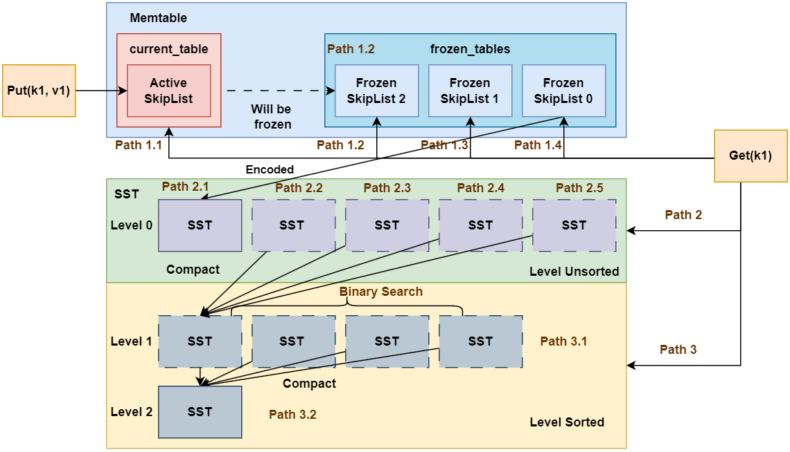
如图所示为LSM Tree的核心架构。我们通过Put, Remove和Get操作的流程对其进行介绍。
1.1 Put 操作流程
Put操作流程如下：
- 将
Put操作的数据写入MemTable中MemTable中包括多个键值存储容器(本项目是采用的跳表SkipList)- 其中有一份称为
current_table, 即活跃跳表, 其可读可写 - 其余的多份跳表均为
frozen_tables, 即即冻结跳表, 其只能进行读操作
- 其中有一份称为
Put的键值对首先插入到current_table中- 如果
current_table的数据量未达到阈值, 直接返回给客户端 - 如果
current_table的数据量达到阈值, 则将current_table被冻结称为frozen_tables中的一份, 并重新初始化一份current_table
- 如果
- 如果前述步骤导致了新的
frozen_table产生, 判断frozen_table的容量是否超出阈值 - 如果超出阈值, 则将
frozen_table持久化到磁盘中, 形成SST(全程是Sorted String Table), 单个SST是有序的。SST按照不同的层级进行划分, 内存中的MemTable刷出的SST位于Level 0,Level 0的SST是存在重叠的。（例如SST 0的key范围是[0, 100),SST 1的key范围是[50, 150), 那么SST 0和SST 1的key在50, 100)范围是重叠的, 因此无法在整个层级进行二分查询）- 当
Level 0的SST数量达到一定阈值时, 会进行Level 0的SST合并, 将SST进行compact操作, 新的SST将放在Level 1中。同时，为保证此层所有SST的key有序且不重叠,compact的SST需要与原来Level 1的SST进行重新排序。由于compact时将上一层所有的SST合并到了下一层, 因此每层单个SST的容量是呈指数增长的。 - 当每一层的
SST数量达到一定阈值时,compact操作会递归地向下一层进行。
1.2 Remove 操作流程
由于LSM Tree的操作是追加写入的, 因此Remove操作与Put操作本质上没有区别, 只是Remove的value被设定为空以标识数据的删除。
1.3 Get 操作流程
Get操作流程如下:
- 先在
Memtable中查找, 如果找到则直接返回。- 优先查找活跃跳表
current_table - 其次尝试查找
frozen_tables, 按照id倒序查找(因为id越小, 表示SkipList越旧)
- 优先查找活跃跳表
- 如果在
Memtable中未找到, 则在SST中查找。- 先在
Level 0层查找, 如果找到则直接返回。注意的是,Level 0层不懂的SST没有进行排序, 因此需要按照SST的id倒序逐个查找(因为id越小, 表示SST越旧, 优先级越低) - 随后逐个在后面的
Level层查找, 此时所有的SST都已经进行过排序, 因此可在Level层面进行二分查询。
- 先在
- 如果
SST中为查询到, 返回。
至此，你对LSM Tree的CRUD操作流程有了一个初步的印象, 如果你现在看不懂的话, 没关系。后续的Lab中会对每个模块有详细的讲解。
2. LSM Tree VS B-Tree
接下来对比分析一下LSM Tree 和 B-Tree。B-Tree 和 LSM-Tree 是两种最常用的存储数据结构，广泛应用于各种数据库和存储引擎中。
2.1 B-Tree 概述
2.1.1 基本结构
- 多路搜索树：每个节点可包含多个键值对及对应子节点指针。
- 页（Page）存储：通常以固定大小页（如 4 KB）为单位，将数据保存在叶子节点或中间节点中。
2.1.2 读写流程
- 查找：从根节点开始，依次向下比较键值，直到叶子节点。
- 写入：在页内定位并修改；若页已满，则分裂节点并向上调整，保持树的平衡。
2.1.3 性能特点
- 查找：时间复杂度 O(log n)，适合读密集型应用。
- 写入：每次随机写与节点分裂会带来较高的 I/O 开销，不利于写密集型场景。
2.2. LSM-Tree 概述
2.2.1 设计动机
为了解决传统 B-Tree 在写密集场景下的随机写和高写放大问题，LSM-Tree 采取“先内存写、再后台合并”的思路，以空间换时间，提升写入吞吐。
2.2.2 主要组件与流程
- MemTable（内存表）：所有写操作首先追加到内存中的有序结构（如跳表）。
- SSTable（磁盘表）：当 MemTable 达到阈值时，将其定期刷新为只读的磁盘文件。
- 后台 Compaction（合并）：将多个旧的 SSTable 合并、去重，并生成新的 SSTable，控制文件数量与数据冗余。
2.2.3 优化手段
- Bloom Filter：快速判断某 key 是否存在于某个 SSTable，减少不必要的磁盘查找。
- Index Block / Block Cache：缓存热点数据页，加速读请求。
- Tiered / Leveled Compaction：通过分层或分阶段合并，平衡写放大与读放大。
2.3. B-Tree vs. LSM-Tree 对比
| 特性 | B-Tree | LSM-Tree |
|---|---|---|
| 写入模式 | 随机写，页内更新，可能分裂节点 | 顺序写（追加），后台合并 |
| 写放大 | 较低 | 较高（受合并策略影响） |
| 读取路径 | 单次树搜索 | 多级查找（MemTable + 多个 SSTable + 合并） |
| 读写性能场景 | 读密集型 | 写密集型 |
| 磁盘友好性 | 随机 I/O | 顺序 I/O，更适合 SSD |
小结：LSM-Tree 在写入吞吐上优于 B-Tree，但读取延迟与 I/O 成本相对更高。 更深入的对比分析可以阅读： https://tikv.org/deep-dive/key-value-engine/b-tree-vs-lsm/
2.4 常见系统及应用场景
| 存储引擎 / 数据库 | 类型 |
|---|---|
| LevelDB | 嵌入式 KV 存储引擎 |
| RocksDB | KV 存储引擎 |
| HyperLevelDB | 分布式 KV 存储 |
| PebbleDB | 嵌入式 KV 存储 |
| Cassandra | 分布式列存储数据库 |
| ClickHouse | 分析型数据库 |
| InfluxDB | 时间序列数据库 |
2.5 LSM-Tree 优化研究
LSM Tree自1997年提出后，有很多研究人员在LSM Tree的基础上进行了改进，部分代表性工作比如：
RocksDB, LevelDB：经典的LSM Based KV存储引擎.
WiscKey: Separating Keys from Values in SSD-Conscious Storage：分离 Key 和 Value，降低写放大
Monkey: Optimal Bloom Filters and Tuning for LSM-Trees：优化布隆过滤器分配策略，减少读放大
这里不再进行详细介绍，感兴趣的可以阅读相关论文。
Lab 0 环境准备
1 OS和编译器环境
本实验目前最高使用的C++标准是C++20, 所以需要使用g++或者clang++进行编译, 因此只要是支持C++20的编译器都可以. 我这里使用的操作系统是kali linux, 其和Ubuntu一样, 都是基于Debian, 且都使用apt作为系统包管理工具, 所以你使用Ubuntu或者Debian执行我之后的安装指令肯定也没有什么问题。
我使用
WSL2的kali linux作为开发环境,WSL2相关内容可以参考WSL入门到入土 经个人验证,WSL2的kali-linux和Ubuntu 22.04均能正常完成本实验
1.1 编译器安装
sudo apt install -y gcc
sudo apt install -y g++
经测试, 只要支持C++20的编译器均可以正常构建本项目, 我测试通过的编译器版本包括:
g++-11/12/13/14/15clang++-16/17/18/19
1.2 语言服务器
本实验推荐使用clangd作为语言服务器, clangd是一个C/C++语言服务器, 其可以提供代码补全、代码跳转、代码高亮等功能。
# Ubuntu/Debian/Kali
sudo apt update
sudo apt install -y clangd
# Arch Linux / Manjaro
sudo pacman -S clang # 安装的是最新版本的 clang 包，clangd 自动包含在其中。
# Fedora / CentOS / RHEL
sudo dnf install clang-tools-extra # langd 在 clang-tools-extra 包中
# openSUSE
sudo zypper install clang-tools
2 项目管理工具
2.1 Xmake
2.1.1 安装
本实验使用Xmake作为项目管理工具, Xmake是一个C/C++项目管理工具, 其可以看做Make+CMake+vcpkg的集合, 包括构建、依赖管理和项目运行等功能。
安装Xmake
curl -fsSL https://xmake.io/shget.text | bash
Xmake官网参考: https://xmake.io/#/getting_started
2.1.2 Xmake语法简介
Xmake使用Lua作为脚本语言，其语法简单易学，支持C/C++的依赖管理、构建、运行等功能。以下是一些基本的内置函数：
- 项目配置：通过
add_rules添加规则，如添加 C++11 支持。 - 目标定义：使用
target定义构建目标，包括可执行文件或库。 - 源文件指定：通过
set_sources指定源代码文件。 - 依赖管理：定义项目时使用
add_requires添加依赖, 定义目标时用add_deps声明本地依赖的目标, 使用add_packages添加第三方包依赖。 - 宏定义与包含路径：分别通过
add_defines和add_includedirs设置。
这里说起来比较抽象, 直接看一个示例：
-- 定义项目
set_project("toni-lsm")
set_version("0.0.1")
set_languages("c++20")
add_rules("mode.debug", "mode.release")
add_requires("gtest") -- 添加gtest依赖
add_requires("muduo") -- 添加Muduo库
target("utils")
set_kind("static") -- 生成静态库
add_files("src/utils/*.cpp") -- 指定源代码文件
add_includedirs("include", {public = true})
target("example")
set_kind("binary") -- 生成可执行文件
add_files("example/main.cpp") -- 指定源代码文件
add_deps("utils") -- 声明依赖目标
add_includedirs("include", {public = true})
set_targetdir("$(buildir)/bin")
add_packages("gtest") -- 添加gtest包
常用的
以上是 Xmake 的基本语法概览，更多细节可以参考官方文档: https://xmake.io/#/getting_started
2.2 (可选)vcpkg安装
正常情况下, Xmake已经足够本项目的构建需求。但是可能存在系统依赖不兼容导致Xmake无法从xrepo拉取依赖的情况, 此时建议使用vcpkg进行第三方的依赖管理。
vcpkg是一个跨平台依赖管理工具, 其可以自动下载、编译和安装C/C++依赖库。虽然Xmake自带一个依赖管理库, 但上面的库还是比较少, 作为补充, 我们可以再安装vcpkg, 这使得我们可以使用vcpkg来安装更多Xmake没有的依赖库。
vcpkg这里不过多介绍, 可以直接看我另一篇文章: https://zhuanlan.zhihu.com/p/849150169
3 VSCode配置
3.1 代码智能提示和跳转
这里使用clangd作为语言服务器, 我们之前已经安装了clangd, 现在只需要在VSCode中安装clangd插件即可:
3.2 集成Xmake
VScode中支持Xmake项目管理工具, 我们可以安装Xmake插件, 使得在VSCode中可以更方便的使用Xmake项目管理工具:
这里有一点需要说明, 如果你安装了Xmake插件, 但是在调试时卡死不懂, 建议禁用Code Runner和C/C++ Runner两个插件, 如果还行不将CMake插件也一起禁用了:
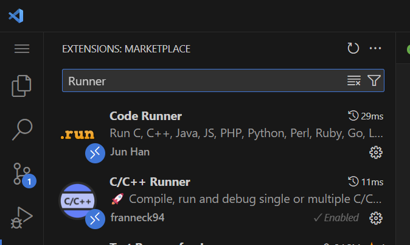
如果你的Xmake在调试时进入的是gdb的页面, 请在设置中将Debug Config Type设置为lldb:
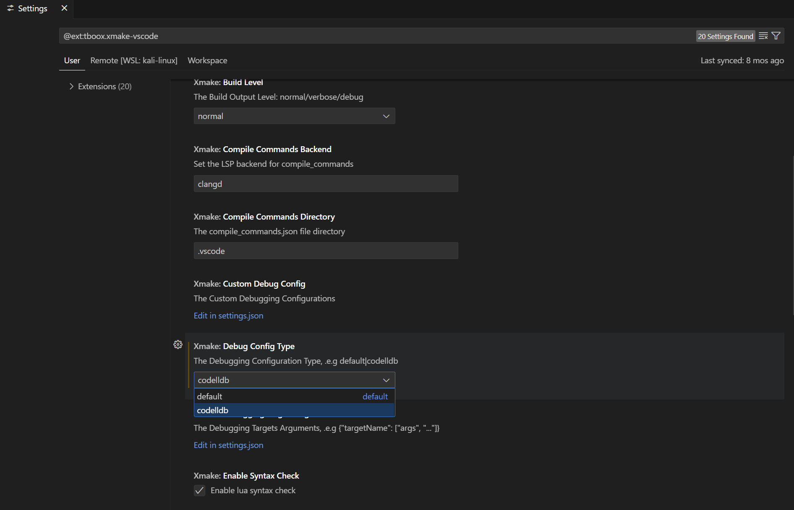
当然你需要先安装CodeLLdb插件:
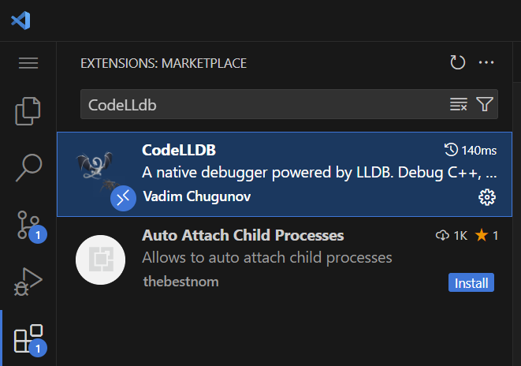
3.3 代码高亮
如果你经常用C++开发, 那么你可能经常会遇到第三方包导致代码高亮跳转失效的问题:
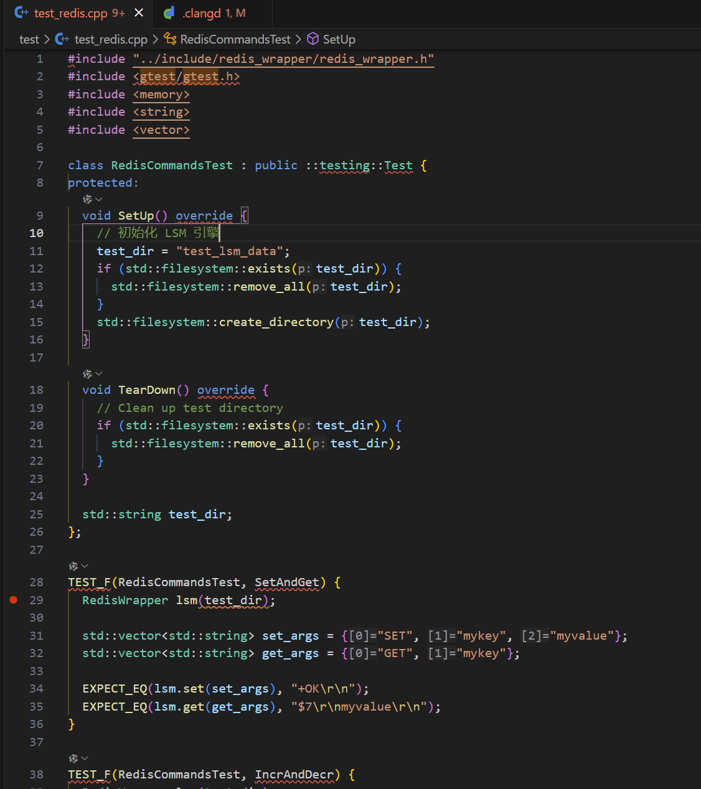
这是因为语言服务器找不到第三方包的头文件, 由于我们使用的语言服务器是clangd, 我们可以在项目根目录中添加.clangd配置文件, 让clangd知道我们的第三方包头文件的位置:
CompileFlags: # 编译标志部分
Add:
- "-std=c++20" # 添加 C++17 支持
- "-isystem/home/toni/proj/vcpkg/installed/x64-linux/include" # 包含头文件, 绝对路径
- "-isystem/home/toni/.xmake/packages/m/muduo/2022.11.01/e9382a25649e4e43bf04f01f925d9c2f/include" # 包含头文件, 绝对路径
这样一来之前的告警就不复存在了
3.4 其他实用插件
3.4.1 Better Comments && TodoTree
Better Comments是一个VSCode插件, 它可以提供代码注释高亮和语法高亮功能, 使得代码更加易读。比如像TODO, !这样的符号:
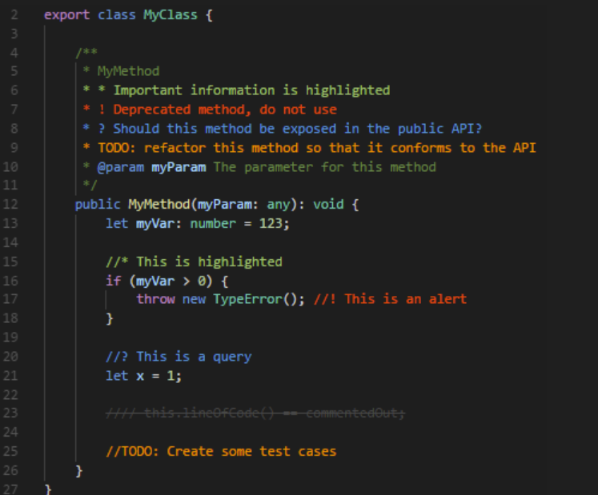
当我们实现一个功能但其后续需要更新时, 我们可以在代码中添加TODO注释, 以便后续更新时更醒目。
TodoTree则会在侧边栏展开我们标记了TODO的注释的位置
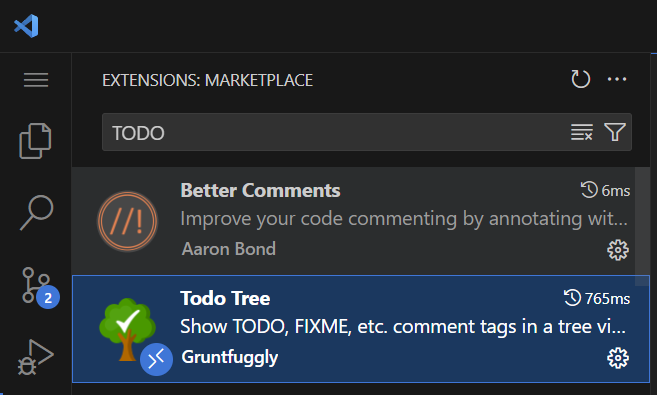
3.4.2 AI插件
如果你有钱, 直接用Cusor, Windsurf, 他们的体验更好
如果和我一样不够钱, 那么你可以使用通义灵码, Cline或者GitHub Copilot:
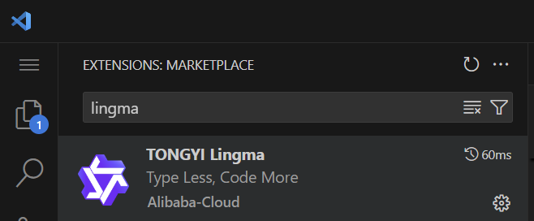
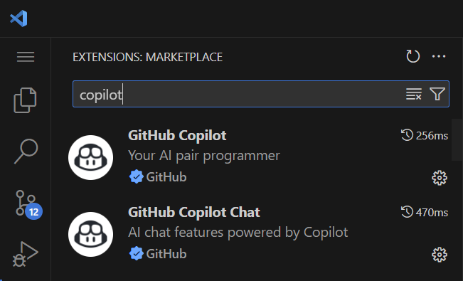
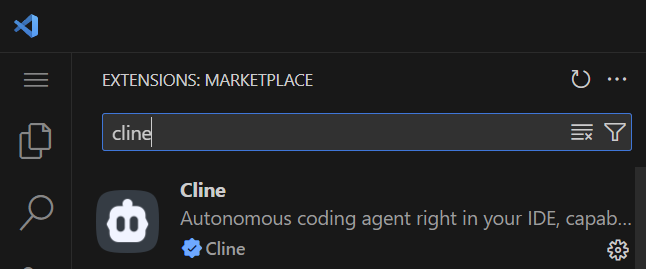
4 Lab代码仓库说明
按照下面的命令拉取实验代码仓库:
git clone https://github.com/ToniXWD/toni-lsm.git --depth 1 -b lab
如果你之前的环境配置没有问题的话, 编译项目能够正常进行:
cd toni-lsm
xmake
项目目录结构
toni-lsm/
├── doc/ # 项目文档
├── example/ # 示例程序
├── include/ # 公共头文件
├── sdk/ # SDK 接口
├── server/ # 服务器端实现
├── src/ # 核心源代码
├── test/ # 测试代码
├── .clangd # Clangd 配置文件
├── .gitignore # Git 忽略文件配置
├── Readme.md # 项目说明文档
└── xmake.lua # xmake 构建配置文件
其中src目录下包含以下子目录：
src/
├── block/ # 数据块的编码与解码
├── iterator/ # 统一的迭代器接口
├── lsm/ # LSM 引擎的核心逻辑
├── memtable/ # 内存表（MemTable）管理
├── redis_wrapper/ # Redis 协议兼容层
├── skiplist/ # 跳表实现
├── sst/ # SSTable 的读写与管理
├── utils/ # 工具函数与通用组件
├── wal/ # Write Ahead Log管理
```Lab 1 跳表实现
提示: 强烈建议你自己创建一个分组实现
Lab的内容, 并在每次新的Lab开始时进行如下同步操作:git pull origin lab git checkout your_branch git merge lab如果你发现项目仓库的代码没有指导书中的 TODO 标记的话, 证明你需要运行上述命令更新代码了
1 跳表在 LSM Tree 中的作用
本Lab中, 你将实现内存的基础数据结构作为MemTable的容器, 这里使用基于红黑树的std::map也是可行的, 但LSM Tree的原始论文中使用的是跳表, 因此我们选择使用跳表作为MemTable的容器，并且正好实现以下这个数据结构 (造轮子是C++的快乐)。
我们再次回顾下面的这张架构图:
这里的MemTable用于存储内存中的键值对数据, 其存储的基础容器即为Skiplist。SkipList被划分为2组: current_table和frozen_table。current_table可读可写, 并是唯一写入的SkipList, frozen_table是只读状态, 用于存储已经写入的键值对数据。current_table容量超出阈值即转化为frozen_table中的一个。
2 跳表的原理
这里简单介绍一下跳表是什么, 跳表就是过个链表, 每个链表的步长不同, 且链表节点是排序的, 查找或插入时, 先使用最大步长层级的链表, 然后定位大区间后, 转入下层低步长层级的链表继续查询, 是不是非常简单? :smile:
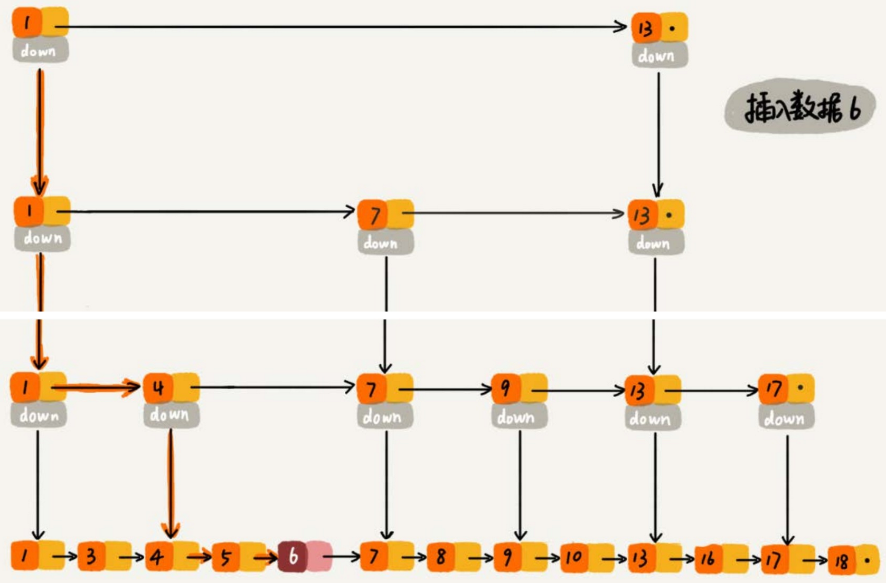
上图所示为跳表的简单示意图, 可以看出跳表由多层链表组成，每一层都是一个有序链表。最底层的链表包含所有元素，而上层的链表只包含部分元素，这些元素作为“索引”加速查找过程。
2.1 查找过程
假设我们要查找值为6的节点：
- 从最高层开始：从最高层的头节点开始，沿着水平指针向右移动，直到遇到大于目标值的节点或到达该层的末尾。
- 向下移动：如果当前层没有找到目标值，则沿着垂直指针向下移动到下一层，重复上述步骤。
- 继续查找：在每一层中重复这个过程，直到在最底层找到目标值或确定目标值不存在。
2.2 插入过程
假设我们要插入值为6的节点：
- 查找插入位置：首先按照查找过程找到值为6应该插入的位置。在这个例子中，值为6应该插入在4和7之间。
- 创建新节点：在最底层创建一个新节点，值为6，并将其插入到正确的位置。
- 随机决定层数：使用随机算法决定新节点的层数。例如，可以以50%的概率决定是否将新节点添加到上一层。
- 更新指针：在每一层中更新指针，确保新节点被正确地链接到链表中。
2.3 删除过程
假设我们要删除值为6的节点：
- 查找要删除的节点：首先按照查找过程找到值为6的节点。
- 逐层删除：从最底层开始，逐层删除该节点，并更新相应的指针。
- 调整层数：如果某一层只剩下头节点和尾节点，则可以考虑删除这一层以优化空间。
3 还欠缺什么?
在你了解到了上述LSM的基础知识后, 你可能觉得SkipList的实现不过如此, 很简单吧。但实际上也没有那么简单，首先你需要思考下面几个问题：
- 不同
Level的链表的步长如何确定?- 最底层
Level 0的链表步长肯定是1, 那么Level 1呢,Level 2呢?
- 最底层
- 什么时候我们需要创建新的
Level的?- 一开始的时候,
SkipList的Level是多少? - 新创建的
Level是逐层创建的吗? 还是说一次性提升好几层?
- 一开始的时候,
- 上面演示的
SkipList仅仅是单向链表, 如果是双向链表, 有什么区别呢?
带着疑问, 你可以开启下一章跳表 put/remove 的实现的Lab实验了
Lab 1.1 跳表的 CRUD
1 准备工作
本Lab中, 你需要修改的代码文件为
src/skiplist/skipList.cppinclude/skiplist/skiplist.h(optional)
这里首先简单介绍本Lab已有的SkipList头文件定义:
// include/skiplist/skiplist.h
struct SkipListNode {
std::string key_; // 节点存储的键
std::string value_; // 节点存储的值
uint64_t tranc_id_; // 事务 id, 目前可以忽略
std::vector<std::shared_ptr<SkipListNode>>
forward_; // 指向不同层级的下一个节点的指针数组
std::vector<std::weak_ptr<SkipListNode>>
backward_; // 指向不同层级的下一个节点的指针数组
// ...
};
这里定义了跳表节点的基础数据, 包括key, value和目前可以忽略的事务tranc_id_
这里定义的跳表节点使用的是双向链表, forward_和backward_分别存储了各层链表节点的前向指针和后向指针, 其中为了避免循环引用, 这里结合使用了weak_ptr和shared_ptr, 详细熟悉现代C++的同学对此非常熟悉。
这里补充说明一下
weak_ptr, 它的作用是避免shared_ptr循环引用, 即一个节点的shared_ptr指针指向另一个节点, 另一个节点的shared_ptr指针指向前者, 这样就会造成两个节点的析构都无法进行, 因为在析构时互相持有对方的引用计数, 类似死锁。但weak_ptr不参与类似shared_ptr的引用计数, 保证了析构的正确进行。但也正因为如此，weak_ptr不保证指针的有效性, 需要想使用.lock()判断该指针是否有效。
然后我们看SkipList的头文件定义：
class SkipList {
private:
std::shared_ptr<SkipListNode>
head; // 跳表的头节点，不存储实际数据，用于遍历跳表
int max_level; // 跳表的最大层级数，限制跳表的高度
int current_level; // 跳表当前的实际层级数，动态变化
size_t size_bytes = 0; // 跳表当前占用的内存大小（字节数），用于跟踪内存使用
// std::shared_mutex rw_mutex; // ! 目前看起来这个锁是冗余的, 在上层控制即可,
// 后续考虑是否需要细粒度的锁
std::uniform_int_distribution<> dis_01; // 随机层数的辅助生成器
std::uniform_int_distribution<> dis_level;
std::mt19937 gen;
};
这里我们定义了最大的链表层数max_level, 你的实现不能有超过max_level的链表数量, current_level定义当前链表的层数(注意是层数, 不是索引), 最后介绍最重要的head, 其只是个哨兵节点, 并不实际存储键值对。
后面三行的gen和dis_01和dis_level是随机数生成器，你可以使用它们来生成随机数。回想我们之前提到的问题, 你应该如何确定每一此插入节点时起最高的连接链表的Level呢? 这里你可以利用这些随机生成器来确定这些层数, 当然你也可以选择自己的方式来实现。
2 put 的实现
你需要实现下面的put函数:
// 插入或更新键值对
void SkipList::put(const std::string &key, const std::string &value,
uint64_t tranc_id) {
spdlog::trace("SkipList--put({}, {}, {})", key, value, tranc_id);
// TODO: Lab1.1 任务：实现插入或更新键值对
// ? Hint: 你需要保证不同`Level`的步长从底层到高层逐渐增加
// ? 你可能需要使用到`random_level`函数以确定层数, 其注释中为你通公路一种思路
}
目前, 你可以先忽略tranc_id这个参数。
此外，之前提到过，跳表的层数是动态增加的， 因此你实现下面的函数可能对你有帮助：
int SkipList::random_level() {
// TODO: 实现随机生成level函数
// 通过"抛硬币"的方式随机生成层数：
// - 每次有50%的概率增加一层
// - 确保层数分布为：第1层100%，第2层50%，第3层25%，以此类推
// - 层数范围限制在[1, max_level]之间，避免浪费内存
return -1;
}
这里给出一个提示, 生成的整型值的每一个二级制位只包含0或1, 可以表示为bool类型, 因此你可以利用它来判断这个节点的最高层数:
Level 0底层链表: 一定连接新节点Level 1链表: 判断random_level()生成整型数的第1位是否为1, 有50%的概率连接新节点, 为0则跳出该判断链Level 2链表: 判断random_level()生成整型数的第2位是否为1, 有50% * 50% =25%的概率连接新节点, 为0则跳出该判断链- ...
当然, 上述只是一个建议的方案, 你可以选择别的实现方案, 并删除
random_level函数 另外, 别忘记了更新size_bytes这个统计信息, 如果你不知道这个统计信息的运作规则, 你可以查看单元测试SkipListTest.MemorySizeTracking
3 remove 的实现
虽然我们的LSM Tree是以仅追加写入的方式使用我们的SkipList, 但为了这个数据结构的完整性, 也是一次手搓底层跳表的体验, 你需要实现正儿八经的remove函数:
// 删除键值对
// ! 这里的 remove 是跳表本身真实的 remove, lsm 应该使用 put 空值表示删除,
// ! 这里只是为了实现完整的 SkipList 不会真正被上层调用
void SkipList::remove(const std::string &key) {
// TODO: Lab1.1 任务：实现删除键值对
}
remove函数的实现的第一步是查询到指定的节点位置, 因此你可以尝试先实现get函数。
4 get 实现
接下来实现get函数:
// 查找键值对
SkipListIterator SkipList::get(const std::string &key, uint64_t tranc_id) {
// spdlog::trace("SkipList--get({}) called", key);
// ? 你可以参照上面的注释完成日志输出以便于调试
// ? 日志为输出到你执行二进制所在目录下的log文件夹
// TODO: Lab1.1 任务：实现查找键值对,
// TODO: 并且你后续需要额外实现SkipListIterator中的TODO部分(Lab1.2)
return SkipListIterator{};
}
可以看到, 我们的get返回的是一个SkipListIterator, 它是一个迭代器, 可以用来遍历SkipList中的元素。这一部分涉及SkipList Iterator的实现不会在文档中进行展开, 你需要阅读源码, 这也是一项基本能力(这部分代码很简单, 别怕:smile:)
这里的迭代器调用构造函数就可以了, 目前的
SkipListIterator实现了一部分, 关于自增等运算符重载, 你将在后续的任务中实现。
4 测试
当你完成上述操作后, test/test_skiplist.cpp中的部分单元测试你应该能够通过:
✗ cd toni-lsm
✗ xmake
✗ xmake run test_skiplist
[==========] Running 12 tests from 1 test suite.
[----------] Global test environment set-up.
[----------] 12 tests from SkipListTest
[ RUN ] SkipListTest.BasicOperations
[ OK ] SkipListTest.BasicOperations (0 ms)
[ RUN ] SkipListTest.LargeScaleInsertAndGet
[ OK ] SkipListTest.LargeScaleInsertAndGet (6 ms)
[ RUN ] SkipListTest.LargeScaleRemove
[ OK ] SkipListTest.LargeScaleRemove (6 ms)
[ RUN ] SkipListTest.DuplicateInsert
[ OK ] SkipListTest.DuplicateInsert (0 ms)
[ RUN ] SkipListTest.EmptySkipList
[ OK ] SkipListTest.EmptySkipList (0 ms)
[ RUN ] SkipListTest.RandomInsertAndRemove
[ OK ] SkipListTest.RandomInsertAndRemove (5 ms)
[ RUN ] SkipListTest.MemorySizeTracking
[ OK ] SkipListTest.MemorySizeTracking (0 ms)
[ RUN ] SkipListTest.Iterator
^C
到SkipListTest.Iterator前的单元测试你应该都能够通过, 卡在SkipListTest.Iterator是因为我们很没有实现迭代器相关功能。
恭喜你, 你已经完成了SkipList的基础CRUD实现。接下来你可以进行Lab1.2了。
Lab 1.2 迭代器
1 概述
这一部分的内容很简单, 只需要补全跳表迭代器即可。跳表的迭代器基本上就是对SkiplistNode的最简化封装, 这一小节的代码量非常少, 也很简单, 不过重点是迭代器的设计和基类的继承关系。
我们先来看它继承了什么基类：
class SkipListIterator : public BaseIterator
这里的BaseIterator是所有组件的基类, 它的声明在include/iterator/iterator.h中。它是后续我们不同组件之间交互的桥梁。建议同学们认真读一下相关代码，很简单但很重要。
2 迭代器补全
你需要补全src/skiplist/skipList.cpp中标记为// TODO: Lab1.2的迭代器函数：
BaseIterator &SkipListIterator::operator++() {
// TODO: Lab1.2 任务：实现SkipListIterator的++操作符
return *this;
}
bool SkipListIterator::operator==(const BaseIterator &other) const {
// TODO: Lab1.2 任务：实现SkipListIterator的==操作符
return true;
}
bool SkipListIterator::operator!=(const BaseIterator &other) const {
// TODO: Lab1.2 任务：实现SkipListIterator的!=操作符
return true;
}
SkipListIterator::value_type SkipListIterator::operator*() const {
// TODO: Lab1.2 任务：实现SkipListIterator的*操作符
return {"", ""};
}
IteratorType SkipListIterator::get_type() const {
// TODO: Lab1.2 任务：实现SkipListIterator的get_type
// ? 主要是为了熟悉基类的定义和继承关系
return IteratorType::Undefined;
}
3 测试
现在你应该能通过test/test_skiplist.cpp中的SkipListTest.Iterator单元测试了
没问题我们开始Lab 1的最后一部分: Lab 1.3 范围查询
Lab 1.3 范围查询
1 范围查询的特性
根据之前的介绍我们了解到, 我们实现的跳表是一个有序数据结构, 而我们构建的数据库是K00V00数据库, 因此除了最基础的CRUD操作外, 我们还需要实现一个范围查询的功能。这些范围查询包括:
- 前缀查询: 通过前缀查询, 我们可以查询以某个前缀开头的所有键值对。比如, 我们数据库中如果
k00ey用userxxx标识用户数据, 可以查询以"userxx"开头的所有用户数据的键值对。 - 范围查询: 通过范围查询, 我们可以查询某个范围内的键值对。比如, 我们数据库中如果
k00ey是学生的学号, 那么我们可以查询某个学号范围内的学生数据[100, 200)。
以上的查询都存在一个特性: 他们是单调的查询, 也就是说在全局数据库中只会出现一个这样的区间。
例如我们有下面的键值对:
(k001, v001), (k002, v002), (k003, v003), (k004, v004), (k005, v005), (k006, v006), (k007, v007), (k008, v008), (k009, v009), (k010, v010)
- 我们查询
key >= k005 && key < k008的范围, 我们可以得到:
(k005, v005), (k006, v006), (k007, v007)`。
- 我们查询
key前缀为k00的键值对, 我们可以得到:
`(k001, v001), (k002, v002), (k003, v003), (k004, v004), (k005, v005), (k006, v006), (k007, v007), (k008, v008), (k009, v009)`。
可以看到, 这些查询都是单调的, 也就是说, 全局数据库中只会出现一个这样的区间。而考虑到我们的数据库是有序的, 因此可以使用二分查询的方式, 确定查询区间的开始位置和结束位置, 以迭代器的形式返回查询结果即可。
2 实现
2.1 前缀查询
你需要实现这两个函数：
// 找到前缀的起始位置
// 返回第一个前缀匹配或者大于前缀的迭代器
SkipListIterator SkipList::begin_preffix(const std::string &preffix) {
// TODO: Lab1.3 任务：实现前缀查询的起始位置
return SkipListIterator{};
}
// 找到前缀的终结位置
SkipListIterator SkipList::end_preffix(const std::string &prefix) {
// TODO: Lab1.3 任务：实现前缀查询的终结位置
return SkipListIterator{};
}
注意的是, 这里迭代器返回的定义类似STL中迭代器end, 其并不属于指定的区间类, 也就是说区间的数学表达是[begin, end)
2.2 谓词查询
这里除了前缀查询外, 还包括各种其他的查询, 只要他们是单调的即可。因此我们给出了一种更通用的接口, 谓词查询, 只需要上层调用者提供一个谓词(lambda函数或者仿函数均可), 我们就可以实现各种单调区间的范围查询。
因此, 我们可以设计这样一个查询接口, 其接收一个谓词, 这个谓词的具体函数体说明此次查询是普通的范围查询、前缀匹配或者是其他的单条区间查询, 但要求结果一定在全局只位于一个连续区间中就可以。同时该谓词不能返回bool值, 而是类似字符串比较那样返回一个int值, 0 表示不匹配, 1 表示大于, -1 表示小于。这样我们才可以根据返回值确定下一步二分查找的方向。
我们需要逐层次实现这个支持谓词的查询接口，其返回一组迭代器表示start和end, 这里我们还是要利用SkipList的有序性多层不同步长的链表来实现快速的匹配查询。
你需要实现下面的函数:
// ? 这里单调谓词的含义是, 整个数据库只会有一段连续区间满足此谓词
// ? 例如之前特化的前缀查询，以及后续可能的范围查询，都可以转化为谓词查询
// ? 返回第一个满足谓词的位置和最后一个满足谓词的迭代器
// ? 如果不存在, 范围nullptr
// ? 谓词作用于key, 且保证满足谓词的结果只在一段连续的区间内, 例如前缀匹配的谓词
// ? predicate返回值:
// ? 0: 满足谓词
// ? >0: 不满足谓词, 需要向右移动
// ? <0: 不满足谓词, 需要向左移动
// ! Skiplist 中的谓词查询不会进行事务id的判断, 需要上层自己进行判断
std::optional<std::pair<SkipListIterator, SkipListIterator>>
SkipList::iters_monotony_predicate(
std::function<int(const std::string &)> predicate) {
// TODO: Lab1.3 任务：实现谓词查询的起始位置
return std::nullopt;
}
Hint: 这里的思路其实也很简单, 推荐的思路如下:
- 先逐次使用高
Level的链表, 逐次降低, 找到满足谓词的区间的某一个节点node1- 根据找到的节点
node1, 逐次向左移动, 直到找到第一个满足谓词的节点node0- 根据找到的节点
node1, 逐次向右移动, 直到找到最后一个满足谓词的节点node2- 返回找到的节点
node0和node2
看到这里你应该也明白了, 为什么实验的
Skiplist的头文件定义采用了双向链表, 目的就是方便这里谓词查询链表节点方向移动的便捷性
3 测试
完成上面的函数后, 你应该可以通过所有的test/test_skiplist.cpp的单元测试:
✗ xmake
[100%]: build ok, spent 5.785s
✗ xmake run test_skiplist
[==========] Running 12 tests from 1 test suite.
[----------] Global test environment set-up.
[----------] 12 tests from SkipListTest
[ RUN ] SkipListTest.BasicOperations
[ OK ] SkipListTest.BasicOperations (0 ms)
[ RUN ] SkipListTest.LargeScaleInsertAndGet
[ OK ] SkipListTest.LargeScaleInsertAndGet (7 ms)
[ RUN ] SkipListTest.LargeScaleRemove
[ OK ] SkipListTest.LargeScaleRemove (6 ms)
[ RUN ] SkipListTest.DuplicateInsert
[ OK ] SkipListTest.DuplicateInsert (0 ms)
[ RUN ] SkipListTest.EmptySkipList
[ OK ] SkipListTest.EmptySkipList (0 ms)
[ RUN ] SkipListTest.RandomInsertAndRemove
[ OK ] SkipListTest.RandomInsertAndRemove (6 ms)
[ RUN ] SkipListTest.MemorySizeTracking
[ OK ] SkipListTest.MemorySizeTracking (0 ms)
[ RUN ] SkipListTest.Iterator
[ OK ] SkipListTest.Iterator (0 ms)
[ RUN ] SkipListTest.IteratorPreffix
[ OK ] SkipListTest.IteratorPreffix (0 ms)
[ RUN ] SkipListTest.ItersPredicate_Base
[ OK ] SkipListTest.ItersPredicate_Base (0 ms)
[ RUN ] SkipListTest.ItersPredicate_Large
[ OK ] SkipListTest.ItersPredicate_Large (5 ms)
[ RUN ] SkipListTest.TransactionId
[ OK ] SkipListTest.TransactionId (0 ms)
[----------] 12 tests from SkipListTest (25 ms total)
[----------] Global test environment tear-down
[==========] 12 tests from 1 test suite ran. (25 ms total)
[ PASSED ] 12 tests.
此外, 单元测试目前并没有规定你的实现的效率, 但你的实现在release模式下, 不应该超过100ms, (30ms以内最佳)
到此为止, Lab1的实验结束, 恭喜你完成本实验!
Lab 2 MemTabele
本Lab中, 你将基于之前实现的Skiplist, 将其组织成内存中负责存储键值对的组件MemTable。
提示: 强烈建议你自己创建一个分组实现
Lab的内容, 并在每次新的Lab开始时进行如下同步操作:git pull origin lab git checkout your_branch git merge lab如果你发现项目仓库的代码没有指导书中的 TODO 标记的话, 证明你需要运行上述命令更新代码了
1 MemTable的构造原理
再次回顾我们的整体架构图：
MemTable负责存储内存中的键值对数据，其存储的基础容器即为Skiplist。SkipList被划分为2组：current_table和frozen_table。current_table可读可写，并是唯一写入的SkipList，frozen_table是只读状态，用于存储已经写入的键值对数据。current_table容量超出阈值即转化为frozen_table中的一个。
为什么要如此设计呢? 答案是为了提升并发性, 我们的查询与写入的逻辑如下图所示:

我们在写入时始终只对活跃的current_table进行写入，而查询时则同时对current_table和frozen_table进行查询。这样, 如果我们不将内存表进行划分的话, 查询和写入将同时对一张大的SkipList进行操作, 这将导致并发度降低。反之, 我们将MemTable划分为current_table和frozen_tables后, 我们可以在写入current_table的同时对frozen table进行查询, 大幅度提升了并发量。
2 SkipList查询的优先级
由之前的理论描述所知, 我们的frozen_tables包含多份Skiplist, 而LSM Tree的写入是追加写入, 后写入的数据会覆盖前面的数据。因此，查询时，我们应该按照从新到旧的顺序查询frozen_tables。如同架构图中Get的查询路径中Path 1.1, Path 1.2, Path 1.3, Path 1.4分别按照从新到旧的顺序查询Skiplist, 一旦查询成功即返回。
3 思考
本实验的惯例是先介绍对应
Lab的基本原理, 再抛出一些思考题，你可以简单地对思考题给出一个心智层面的解决方案, 然后开启后续的Lab。
现在又到了我们的思考环节, 根据之前的描述, 将SkipList组织为MemTable好像很简单。但是别忘了，我们之前讲述的都是最基本的单点查询和写入，如果是更复杂的情形呢？ 比如：
- 要查询前缀为
xxx的所有键值对- 很多个
Skiplist中都可能存在这样的键值对, 我们需要依次遍历吗? - 有些旧
Skiplist中的键值对已经被更新的Skiplist的数据覆盖了, 是否需要过滤? 如何过滤?
- 很多个
- 如何为
MemTable实现迭代器?KV数据库的迭代器肯定是按照key的顺序从小大大排布- 多个
Skiplist的键值对如何进行整合, 从而也实现从小大大的排布?
通过本节对MemTable的基本介绍, 以及进阶问题的思考, 你可以开始[Lab ]
Lab 2.1 简单 CRUD
1 准备工作
本小节需要你修改的代码：
-src/memtable/memtable.cpp
include/memtable/memtable.h(Optional)
同样的，我们先看看代码的头文件东一，从而了解我们的MemTable的整体实现思路:
class MemTable {
// ...
private:
std::shared_ptr<SkipList> current_table;
std::list<std::shared_ptr<SkipList>> frozen_tables;
size_t frozen_bytes;
std::shared_mutex frozen_mtx; // 冻结表的锁
std::shared_mutex cur_mtx; // 活跃表的锁
};
这里我们根据之前的原理介绍, 对之前的SkipList简单包装, 使用list保证一系列冻结的Skiplist。这里建议的规定是：
最新的Skiplist放在list的head位置，最旧的Skiplist放在list的tail位置。
此外, 你在头文件中除了基础的CRUD函数外, 还会看到这个函数:
std::shared_ptr<SST> flush_last(SSTBuilder &builder, std::string &sst_path,
size_t sst_id,
std::shared_ptr<BlockCache> block_cache);
这个函数不是本Lab要求实现的函数, 但可以先进行简单的介绍便于认知整体架构。当MemTable中的数据量达到阈值时, 会调用这个函数将最古老的一个SST进行持久化, 形成一个Level 0的SST, 因此你可以理解为, Skiplist是和Level 0 SST的数据来源。
2 put 的实现
你首先要实现的是put系列的函数:
void MemTable::put_(const std::string &key, const std::string &value,
uint64_t tranc_id) {
// TODO: Lab2.1 无锁版本的 put
}
void MemTable::put(const std::string &key, const std::string &value,
uint64_t tranc_id) {
// TODO: Lab2.1 有锁版本的 put
}
void MemTable::put_batch(
const std::vector<std::pair<std::string, std::string>> &kvs,
uint64_t tranc_id) {
// TODO: Lab2.1 有锁版本的 put_batch
}
这里的put有多个版本, 分别是无锁版本和有锁版本的单次put以及有锁版本的批量put, 你必须按照语义实现这些函数, 因为后续上层组件调用的函数默认携带_后缀的函数版本是无锁操作版本。
同时简单讲述以下如此设计的原因，某些并发控制只需要当前的MemTable组件控制即可, 但有些并发控制场景设计多个组件, 需要再上层进行, 例如后续事务提交时的冲突检测就是一个典型的案例。
Hint: 你不仅仅需要做简单的
API调用, 还需要判断什么时候Skiplist的容量超出阈值需要进行冻结
3 get 的实现
接下来实现get的一系列函数, 同样包括无锁版本与有锁版本, 并且你还需要实现不同部分的分阶段查询:
SkipListIterator MemTable::cur_get_(const std::string &key, uint64_t tranc_id) {
// 检查当前活跃的memtable
// TODO: Lab2.1 从活跃跳表中查询
return SkipListIterator{};
}
SkipListIterator MemTable::frozen_get_(const std::string &key,
uint64_t tranc_id) {
// TODO: Lab2.1 从冻结跳表中查询
// ? 你需要尤其注意跳表的遍历顺序
// ? tranc_id 参数可暂时忽略, 直接插入即可
return SkipListIterator{};
;
}
SkipListIterator MemTable::get(const std::string &key, uint64_t tranc_id) {
// TODO: Lab2.1 查询, 建议复用 cur_get_ 和 frozen_get_
// ? 注意并发控制
return SkipListIterator{};
}
SkipListIterator MemTable::get_(const std::string &key, uint64_t tranc_id) {
// TODO: Lab2.1 查询, 无锁版本
}
4 remove 实现
最后, 插入value为空的键值对表示对数据的删除标记, 同样有不同的版本:
void MemTable::remove_(const std::string &key, uint64_t tranc_id) {
// TODO Lab2.1 无锁版本的remove
}
void MemTable::remove(const std::string &key, uint64_t tranc_id) {
// TODO Lab2.1 有锁版本的remove
}
void MemTable::remove_batch(const std::vector<std::string> &keys,
uint64_t tranc_id) {
// TODO Lab2.1 有锁版本的remove_batch
}
5 冻结活跃表
Skiplist的容量超出阈值需要进行冻结时需要调用下述函数。
至于这个函数的调用实际，作者建议是在每次put后检查容量是否超出阈值, 然后同步地嗲用该函数, 当然你也可以启用一个后台线程进行周期性检查。
void MemTable::frozen_cur_table_() {
// TODO: 冻结活跃表
}
void MemTable::frozen_cur_table() {
// TODO: 冻结活跃表, 有锁版本
}
Hint
src/config/config.cpp中定义了一个配置文件的单例, 其会解析项目目录中的config.toml配置文件, 其中包含了各种阈值的推荐值- 你可以使用类似
TomlConfig::getInstance().getLsmPerMemSizeLimit()的方法获取配置文件中定义的常量- 你可以修改
config.toml配置文件的值, 但尽量不要新增配置项, 否则你需要自行修改src/config/config.cpp中的解析函数
6 测试
当你完成上述所有功能后, 你可以通过如下测试:
✗ xmake
✗ xmake run test_memtable
[==========] Running 9 tests from 1 test suite.
[----------] Global test environment set-up.
[----------] 9 tests from MemTableTest
[ RUN ] MemTableTest.BasicOperations
[ OK ] MemTableTest.BasicOperations (2 ms)
[ RUN ] MemTableTest.RemoveOperations
[ OK ] MemTableTest.RemoveOperations (0 ms)
[ RUN ] MemTableTest.FrozenTableOperations
[ OK ] MemTableTest.FrozenTableOperations (0 ms)
[ RUN ] MemTableTest.LargeScaleOperations
[ OK ] MemTableTest.LargeScaleOperations (0 ms)
[ RUN ] MemTableTest.MemorySizeTracking
[ OK ] MemTableTest.MemorySizeTracking (0 ms)
[ RUN ] MemTableTest.MultipleFrozenTables
[ OK ] MemTableTest.MultipleFrozenTables (0 ms)
[ RUN ] MemTableTest.ConcurrentOperations
^C
ConcurrentOperations需要你实现后续的迭代器功能。
接下来你可以开启下一小节的Lab
Lab 2.2 迭代器
1 迭代器的作用
我们需要实现整个MemTable的迭代器, 这算是本Lab的一个难点, 因为新的SkipList中的元素会导致旧的SkipList的部分元素失效, 因此不能简单地将不同SkipList的遍历结果拼接起来就完事儿。
试想下面这个场景：
SkipList0: ("k1", "v1") -> ("k4", "") -> ("k5", "v3")
SkipList1: ("k2", "v2") -> ("k3", "v3") -> ("k4", "v4")
SkipList0中的("k4", "")表示删除了"k4", 因此如果我们先消耗了SkipList0的迭代器, 那么SkipList1中就无法获取"k3"的不合法性, 因此需要对不同SkipList的迭代器进行merge操作来删除这些无效的元素。
本实验的建议方案是:
可以维护一个堆，堆首先根据key排序, 然后根据SkipList id排序, 因此相同的key, 后插入的记录肯定更靠近堆顶(因为SkipList id越小表示其越新), 因此堆顶的某个key一定是整个MemTable中该key的最新记录, 迭代器对该key只需要堆顶的这一个元素, 其余在取出堆顶后即可全部移除(因为首先按照key排序, 所以他们一定连续出现在堆顶)
2 堆去重的原理
我们假设有以下两个 SkipList：
SkipList0 (id=0): ("k1", "v1") -> ("k4", "") -> ("k5", "v3") // 最新的
SkipList1 (id=1): ("k2", "v2") -> ("k3", "v3") -> ("k4", "v4")
我们借助之前Skiplist的迭代器, 遍历各个Skiplist, 把所有键值对按 key 排序后放入堆，排序依据是：
- 先按
key升序，即key越小越靠近堆顶 - 对于相同的
key，选择tranc_id较大（越新）的优先（越靠近堆顶）(这一条你可暂时哦忽略, 测试中tranc_id都是0) - 按照
SkipList来源的新旧排序, 新SkipList的键值对更靠近堆顶(这里的id是构建堆时手动赋予的)
最后的排序依据中, 这个新旧的顺序需要你手动指定, 无论你实现的排序是更大的
id表示更新的SKiplist还是更小的id表示更新的SKiplist, 自身逻辑自洽即可 建议将更新的Skiplist用更大的id标识, 因为id随新的Skiplist增长是很正常的事情
遍历迭代器, 并逐一构建堆元素插入堆中, 最终的堆的示意图为:
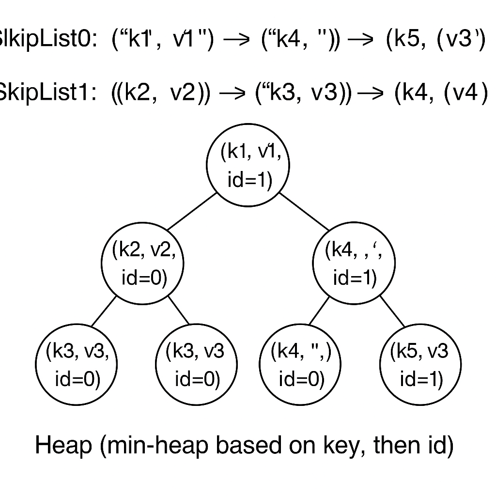
这里可以看到, k4的键值对中, 更新的跳表中的键值对更靠近堆顶, 当我们遍历这个堆并不断弹出元素时, 相同key的元素只能被迭代器(这个堆肯定是迭代器封装的一个成员变量)对外暴露一次, 其余相同key的键值对进行丢弃即可, 这样我们就能利用类似堆排序的功能, 同时完成了排序和去重。
3 基于堆的迭代器实现
3.1 代码框架介绍
因此，本实验你首先要基于上述原理的介绍实现一个基于堆的迭代器。
本小节需要你修改的代码：
src/iterator/iterator.cppinclude/iterator/iterator.h(Optional)src/memtable/memtable.cppinclude/memtable/memtable.h(Optional)
首先是SearchItem, 我们来看定义:
class SstIterator;
// *************************** SearchItem ***************************
struct SearchItem {
std::string key_;
std::string value_;
uint64_t tranc_id_;
int idx_;
int level_; // 来自sst的level
SearchItem() = default;
SearchItem(std::string k, std::string v, int i, int l, uint64_t tranc_id)
: key_(std::move(k)), value_(std::move(v)), idx_(i), level_(l),
tranc_id_(tranc_id) {}
};
bool operator<(const SearchItem &a, const SearchItem &b);
bool operator>(const SearchItem &a, const SearchItem &b);
bool operator==(const SearchItem &a, const SearchItem &b);
其就是我们之前提到的每个堆节点的数据结构, 这里的构造函数中, k, v, i即为key, value, id(跳表的), l表示来源的层级, 现在我们都是在内存操作, 设为0即可, tranc_id不需要你理解, 直接赋值即可。
然后是你要实现的迭代器HeapIterator的定义:
class HeapIterator : public BaseIterator {
friend class SstIterator;
public:
HeapIterator() = default;
HeapIterator(std::vector<SearchItem> item_vec, uint64_t max_tranc_id);
// ...
private:
std::priority_queue<SearchItem, std::vector<SearchItem>,
std::greater<SearchItem>>
items;
mutable std::shared_ptr<value_type> current; // 用于存储当前元素
uint64_t max_tranc_id_ = 0;
};
这里的priority_queue就是我们之前提到的堆, C++的堆实际上就是优先队列。
在
C++中，当使用std::priority_queue来实现小根堆（min-heap）时，你需要使用std::greater<SearchItem>作为比较函数对象。感兴趣的同学可以查一查为什么要这么设计。
3.2 实现 SearchItem 的比较规则
bool operator<(const SearchItem &a, const SearchItem &b) {
// TODO: Lab2.2 实现比较规则
return true;
}
bool operator>(const SearchItem &a, const SearchItem &b) {
// TODO: Lab2.2 实现比较规则
return true;
}
bool operator==(const SearchItem &a, const SearchItem &b) {
// TODO: Lab2.2 实现比较规则
return true;
}
这里你需要按照之前介绍的比较规则进行代码补全。
3.3 实现构造函数
接下来你需要实现HeapIterator的构造函数, 其参数就是已经遍历了所有Skiplist的迭代器构造的vector, max_tranc_id你可以暂时忽略:
HeapIterator::HeapIterator(std::vector<SearchItem> item_vec,
uint64_t max_tranc_id)
: max_tranc_id_(max_tranc_id) {
// TODO: Lab2.2 实现 HeapIterator 构造函数
}
Hint: 构造完堆后, 是否需要额外的一些初始化的滤除?
3.4 实现自增函数
接下来自增函数是最重要的, 自增函数的逻辑是:
- 自增后的
key不能是之前相同的key, 如果是(以为着实际上被前者覆写了), 则跳过 - 自增后的键值对不能是删除标记, 即
value为空
BaseIterator &HeapIterator::operator++() {
// TODO: Lab2.2 实现 ++ 重载
return *this;
}
同时, 这些辅助函数的实现有助于你完成:operator++()和之前的构造函数:
bool HeapIterator::top_value_legal() const {
// TODO: Lab2.2 判断顶部元素是否合法
// ? 被删除的值是不合法
// ? 不允许访问的事务创建或更改的键值对不合法(暂时忽略)
return true;
}
void HeapIterator::skip_by_tranc_id() {
// TODO: Lab2.2 后续的Lab实现, 只是作为标记提醒
}
3.4 其他运算符重载函数
其他运算符重载函数就简单了很多, 但仍然是对你代码理解的考验:
HeapIterator::pointer HeapIterator::operator->() const {
// TODO: Lab2.2 实现 -> 重载
return nullptr;
}
HeapIterator::value_type HeapIterator::operator*() const {
// TODO: Lab2.2 实现 * 重载
return {};
}
BaseIterator &HeapIterator::operator++() {
// TODO: Lab2.2 实现 ++ 重载
return *this;
}
bool HeapIterator::operator==(const BaseIterator &other) const {
// TODO: Lab2.2 实现 == 重载
return true;
}
bool HeapIterator::operator!=(const BaseIterator &other) const {
// TODO: Lab2.2 实现 != 重载
return true;
}
其中->运算符重载, 你可以直接利用已有的成员变量mutable std::shared_ptr<value_type> current, 返回器地址, 但你需要在构造函数和自增函数中对其进行正确的初始化和重置, 下面这个函数即为初始化和重置的逻辑实现:
void HeapIterator::update_current() const {
// current 缓存了当前键值对的值, 你实现 -> 重载时可能需要
// TODO: Lab2.2 更新当前缓存值
}
4 MemTable的迭代器
接下来, 有了HeapIterator, 你可以实现MemTable组件的全局迭代器了:
HeapIterator MemTable::begin(uint64_t tranc_id) {
// TODO Lab 2.2 MemTable 的迭代器
return {};
}
HeapIterator MemTable::end() {
// TODO Lab 2.2 MemTable 的迭代器
return HeapIterator{};
}
这里的逻辑就是利用之前实现的HeapIterator对整个MemTable进行遍历。
5 测试
当你完成上述所有功能后, 你可以通过如下测试:
✗ xmake
✗ xmake run test_memtable
[==========] Running 9 tests from 1 test suite.
[----------] Global test environment set-up.
[----------] 9 tests from MemTableTest
[ RUN ] MemTableTest.BasicOperations
[ OK ] MemTableTest.BasicOperations (0 ms)
[ RUN ] MemTableTest.RemoveOperations
[ OK ] MemTableTest.RemoveOperations (0 ms)
[ RUN ] MemTableTest.FrozenTableOperations
[ OK ] MemTableTest.FrozenTableOperations (0 ms)
[ RUN ] MemTableTest.LargeScaleOperations
[ OK ] MemTableTest.LargeScaleOperations (0 ms)
[ RUN ] MemTableTest.MemorySizeTracking
[ OK ] MemTableTest.MemorySizeTracking (0 ms)
[ RUN ] MemTableTest.MultipleFrozenTables
[ OK ] MemTableTest.MultipleFrozenTables (0 ms)
[ RUN ] MemTableTest.IteratorComplexOperations
[ OK ] MemTableTest.IteratorComplexOperations (0 ms)
[ RUN ] MemTableTest.ConcurrentOperations
[ OK ] MemTableTest.ConcurrentOperations (601 ms)
[ RUN ] MemTableTest.PreffixIter
[ OK ] MemTableTest.PreffixIter (0 ms)
[----------] 9 tests from MemTableTest (602 ms total)
[----------] Global test environment tear-down
[==========] 9 tests from 1 test suite ran. (602 ms total)
[ PASSED ] 9 tests.
接下来你可以开启下一小节的Lab
Lab 2.3 范围查询
1 概述
还记得我们对Skiplist实现了前缀查询和谓词查询吗, 他们本质上都是范围查询, 这一小节, 你将基于已有的Skiplist的前缀查询和谓词查询接口, 实现MemTable的谓词查询。
本小节需要你修改的代码：
-src/memtable/memtable.cpp
include/memtable/memtable.h(Optional)
2 实现 iters_preffix
HeapIterator MemTable::iters_preffix(const std::string &preffix,
uint64_t tranc_id) {
// TODO Lab 2.3 MemTable 的前缀迭代器
return {};
}
你需要借助Skiplist的begin_preffix完成这个MemTable::iters_preffix, 你可以从返回值类型推断出, 我们仍然需要借助HeapIterator进行去重和排序。
这里需要注意的还是自定义的排序id(就是SearchItem里面的成员变量idx_), 你需要在构造HeapIterator手动赋予idx_正确的整型值。
另外，tranc_id相关的滤除操作你可以暂时忽略, 直接传入SearchItem的构造函数即可。
需要注意的是, 这个返回的迭代器从语义上是
begin迭代器, 其使用方式是判断自身是否is_valid()以及is_end(), 不同于C++ STL中给定一对迭代器确定范围的风格。这也算是作者前期项目设计的不足之处，介于次代码和实验还是初版，能用能跑就行。
3 实现 iters_monotony_predicate
std::optional<std::pair<HeapIterator, HeapIterator>>
MemTable::iters_monotony_predicate(
uint64_t tranc_id, std::function<int(const std::string &)> predicate) {
// TODO Lab 2.3 MemTable 的谓词查询迭代器起始范围
return std::nullopt;
}
和iters_preffix类似, 只不过查询逻辑从特化的前缀查询变成了适用性更广泛的谓词查询, 注意事项也都差不多, 同样是借助Skiplist的iters_monotony_predicate(predicate)获取初步的结果, 再用HeapIterator区中。
4 测试
完成上面的函数后, 你应该可以通过所有的test/test_memtable.cpp的单元测试:
✗ xmake
✗ xmake run test_memtable
[==========] Running 12 tests from 1 test suite.
[----------] Global test environment set-up.
[----------] 12 tests from MemTableTest
[ RUN ] MemTableTest.BasicOperations
[ OK ] MemTableTest.BasicOperations (0 ms)
[ RUN ] MemTableTest.RemoveOperations
[ OK ] MemTableTest.RemoveOperations (0 ms)
[ RUN ] MemTableTest.FrozenTableOperations
[ OK ] MemTableTest.FrozenTableOperations (0 ms)
[ RUN ] MemTableTest.LargeScaleOperations
[ OK ] MemTableTest.LargeScaleOperations (1 ms)
[ RUN ] MemTableTest.MemorySizeTracking
[ OK ] MemTableTest.MemorySizeTracking (0 ms)
[ RUN ] MemTableTest.MultipleFrozenTables
[ OK ] MemTableTest.MultipleFrozenTables (0 ms)
[ RUN ] MemTableTest.IteratorComplexOperations
[ OK ] MemTableTest.IteratorComplexOperations (0 ms)
[ RUN ] MemTableTest.ConcurrentOperations
[ OK ] MemTableTest.ConcurrentOperations (604 ms)
[ RUN ] MemTableTest.PreffixIter
[ OK ] MemTableTest.PreffixIter (0 ms)
[ RUN ] MemTableTest.IteratorPreffix
[ OK ] MemTableTest.IteratorPreffix (0 ms)
[ RUN ] MemTableTest.ItersPredicate_Base
[ OK ] MemTableTest.ItersPredicate_Base (0 ms)
[ RUN ] MemTableTest.ItersPredicate_Large
[ OK ] MemTableTest.ItersPredicate_Large (13 ms)
[----------] 12 tests from MemTableTest (620 ms total)
[----------] Global test environment tear-down
[==========] 12 tests from 1 test suite ran. (620 ms total)
[ PASSED ] 12 tests.
到此为止, Lab2的实验结束, 恭喜你完成本实验!
Lab 3 SST
1 概述
这一章的开头我们再次搬出我们的经典架构图:
通过Lab1和Lab2的学习，我们已经初步完成了LSM Tree中内存的基础读写组件, 这一章我们将眼光从内存迁移到磁盘, 实现SST相关的内容。
从架构图中我们知道，SST文件是LSM Tree中持久化的存储文件，其中Level 0的SST存储了MemTable中单个Skiplist的数据，并且提供了LSM Tree中数据的有序性。因此对于一个磁盘中的文件, 我们肯定需要实现文件的编解码设计。其中编码设计用于将内存的Skiplist类的实例转化为SST文件, 而读取SST中的某些键值对时我们需要将文件进行解码并读取数据到内存。因此这一章中编解码是一大主题内容。而且相对之前常驻内存的MemTable而言, 这里的编解码代码的实现更为复杂, 尤其是Debug难度比之前要大上不少。
此外，我们从架构图中还了解到，不同Level的SST是需要再容量超出阈值时进行合并(Compact)的, 但Compact在本实验中是由更上层的控制结构实现的, 因此本节实验你不需要担心Compact, 这是后续Lab的内容, 这里提一嘴只是为了有助于从理论上理解其运行机制。
2 SST 的结构
从架构图中我们了解到，不同Level之间的容量呈指数增长, 其中最小的Level 0的SST也是SkipList的大小, 而SkipList实例在内存中是由多个链表组成的, 查询速度基本上和红黑树差不多。但假若我们想从SST中查一个键值对，总不可能把整个SST都解码放到内存中吧? 要知道高层Level的SST是可以轻易增长到GB的大小的。因此，SST必须进行内部的切分, 这里切分形成的一块数据我们称之为Block。因此对Block的组织管理就是SST设计的核心内容。Toni-LSM的SST文件结构如下:
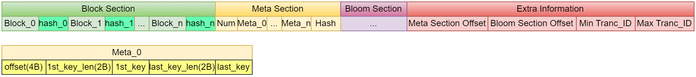
SST文件由多个Block组成，每个Block_x内部暂且看成一个黑箱, 只需要知道其是我们查询的基本IO单元即可。 每个Block_x后会追加32位的哈希值，用于校验。每个Block对应一个Meta, 每个Meta记录这个Block在SST文件中的偏移量、第一个和最后一个key的元数据(长度和大小)。
这里，Block是基本的IO单元，这就意味着在查询一个key时, 其所在的整个Block的数据都会被解码并加载到内存中的。你可以类比操作系统中的Page, 其是内存和磁盘之间的基本IO单元。
另一方面，在查询一个key时，如何确定查哪一个Block呢? 这里就需要将SST中的Extra Information中的元数据提前加载到内存中, 这些元数据能够定位到Meta Section, 而Meta Section是一个数组, 其中每个Meta_x记录了对应Block在整个SST中的位置， 可以以此来快速对指定为位置的二进制数据进行解码。
你肯定能想到, 作为基本的IO单元, 我们肯定会为其实现一个缓存池的, 这样可以避免每次查询时都进行磁盘IO。
心细的你肯定也注意到, 这里有一个Bloom Section, 这其实就是布隆过滤器中的bit位数组, 其用处是拦截无效的访问, 这会在后续的Lab中进行详细讲解。
3 Block的结构
现在我们来看Block的结构, Block是SST中的基本IO单元，即SST的每个查询最终是在Blcok中定位到具体的键值对的, 其结构为:
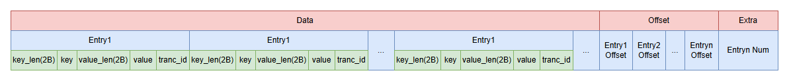
上图的
B表示一个字节
一个Block包含:Data Section、Offset Section和Extra Information三部分:
Data Section: 存放所有的数据, 也就是key和value的序列化数据- 每一对
key和value都是一个Entry， 编码信息包括key_len、key、value_len和valuekey_len和value_len都是2B的uint16_t类型, 用于表示key和value的长度key和value就是对应长度的字节数, 因此需要用varlen来表示。
- 每一对
Offset Section: 存放所有Entry的偏移量, 用于快速定位Extra Information: 存放num_of_elements, 也就是Entry的数量
这样编码满足了最基本的要求, 从最后的2个字节可以知道Block包含了多少kv对, 再从Offset Section中查询对应的kv对数据的偏移。
4 思考
现在有了Block和SST的设计方案, 你可以思考如下几个问题:
Blcok和SST是如何构建的?Block如何进行划分?Block内部如何实现迭代器吗?SST的迭代器是单独设计, 还是对已有Blcok迭代器的封装? 如何封装?Block的缓存池如何设计?- 布隆过滤器和缓存池的设计各自有什么作用? 他们的功能是否重复?
当你对上述问题有过简单思考后, 你可以开启本次Lab了, 你需要有一定心理准备, 这一大章节的Lab原比之前的MemTable和Skiplist复杂, 现在开始第一部分 Block 实现。
阶段1-Block
本阶段主要实现Block类, 包括Block的编码格式, 编解码方法、以及Block的迭代器和相关的查询功能。
提示: 强烈建议你自己创建一个分组实现
Lab的内容, 并在每次新的Lab开始时进行如下同步操作:git pull origin lab git checkout your_branch git merge lab如果你发现项目仓库的代码没有指导书中的 TODO 标记的话, 证明你需要运行上述命令更新代码了
Lab 3.1 Block 实现
1 准备工作
老套路, 我们先理一下Block的数据结构, 看看头文件定义:
// include/block/block.h
class Block : public std::enable_shared_from_this<Block> {
friend BlockIterator;
private:
std::vector<uint8_t> data; // 对应架构图的 Data
std::vector<uint16_t> offsets; // 对应架构图的 Offset
size_t capacity;
struct Entry {
std::string key;
std::string value;
uint64_t tranc_id;
};
// ...
};
这里可能涉及C++的新特性:
public std::enable_shared_from_this<Block>
std::enable_shared_from_this 是 C++11 引入的一个标准库特性，它允许一个对象安全地创建指向自身的std::shared_ptr。这里先简单说明一下, 后续实现迭代器的时候就知道其作用了。
这里主要对data和offsets这两个数据结构进行说明, 他们在构建阶段和读取阶段存在一定区别, 首先还是给出架构图:
构建阶段
当我们从Skiplist拿到数据构建一个SST时, SST需要逐个构建Block, 这个Block在构建时步骤如下:
- 逐个将编码的键值对(也就是
Entry)写入data数组, 同时将每个Entry的偏移量记录在内存中的offsets数组中。 - 当这个
Block容量达到阈值时,Block构建完成, 你需要将offsets数组写入到Block的末尾。 - 还需要再
Block末尾写入一个Entry Num值, 用于标识这个Block中键值对的数量, 从而在解码时获取Offset的其实位置(因为每个Entry Offset大小是固定的整型值) - 当前
Block构建完成,SST开始构建下一个Block。
这里之所以将先将键值对持久化到
data数组, 而元信息暂存于内存的offsets数组, 是因为Data是在数据部分之后的的Offset部分的偏移需要再键值对完全写入Data部分后才能确定
解码阶段
解码阶段, 直接将Data、Offset解码形成内存中的Block的实例以为上层组件提供查询功能，同时如果实现了缓存池，需要再缓存池中进行记录。
2 代码实现
你需要修改的函数都在src/block/block.cpp中。
2.1 Block 编码和解码
这里你先不要管这个Block是哪里来的, 就当它已经存在, 实现编码和解码的功能:
std::vector<uint8_t> Block::encode() {
// TODO Lab 3.1 编码单个类实例形成一段字节数组
return {};
}
std::shared_ptr<Block> Block::decode(const std::vector<uint8_t> &encoded,
bool with_hash) {
// TODO Lab 3.1 解码字节数组形成类实例
return nullptr;
}
这里特别说明, encode时的数据是不包括校验的哈希值的 因为哈希值是在SST控制Block构建过程中计算的, 但在decode时可以通过with_hash参数来指示传入的encoded是否包含哈希值, 如果包含哈希值, 则需要先校验哈希值是否正确, 校验失败则抛出异常。
之所以
encode不计算哈希值,decode按需计算哈希值, 其实是作者初版代码设计不佳, 这里先不纠结了, 后续可能会进行优化, 如果你有优化方案, 可对代码进行修改后提PR
编解码时你需要注意数据的格式, 如果校验格式错误, 你需要抛出异常, 否则错误将非常难以
Debug
2.2 局部数据编解码函数
对于二进制数据, 你需要按照设计的编码结构获取其key, value和tranc_id, 这里我们实现几个辅助函数:
// 从指定偏移量获取entry的key
std::string Block::get_key_at(size_t offset) const {
// TODO Lab 3.1 从指定偏移量获取entry的key
return "";
}
// 从指定偏移量获取entry的value
std::string Block::get_value_at(size_t offset) const {
// TODO Lab 3.1 从指定偏移量获取entry的value
return "";
}
uint16_t Block::get_tranc_id_at(size_t offset) const {
// TODO Lab 3.1 从指定偏移量获取entry的tranc_id
// ? 你不需要理解tranc_id的具体含义, 直接返回即可
return 0;
}
2.3 构建 Block
Block构建是由SST控制的, 其会不断地调用下面这个函数添加键值对:
bool Block::add_entry(const std::string &key, const std::string &value,
uint64_t tranc_id, bool force_write) {
// TODO Lab 3.1 添加一个键值对到block中
// ? 返回值说明：
// ? true: 成功添加
// ? false: block已满, 拒绝此次添加
return false;
}
这里需要注意, force_write参数表示是否强制写入, 如果为true, 则不管Block是否已满, 都强制写入, 否则如果Block已满, 则拒绝此次写入。
Block是否已满的判断将当前数据容量与成员变量capacity进行比较, capacity在Block初始化时由SST传入, 表示一个Block的最大容量。
如果你需要一些使用
config.toml中预定义的一些阈值变量或者其他常来那个, 你也可以通过TomlConfig::getInstance().getXXX的方式获取
2.4 二分查询
Block构建时是通过SST遍历Skiplist的迭代器调用add_entry实现的, 因此Block的数据是有序的, 你需要实现一个二分查找函数, 用于在Block中查找指定key所属的Entry在offset元数据中的索引:
std::optional<size_t> Block::get_idx_binary(const std::string &key,
uint64_t tranc_id) {
// TODO Lab 3.1 使用二分查找获取key对应的索引
return std::nullopt;
}
get_value_binary函数中会调用get_idx_binary函数, 并返回指定key的value:
// 使用二分查找获取value
// 要求在插入数据时有序插入
std::optional<std::string> Block::get_value_binary(const std::string &key,
uint64_t tranc_id) {
auto idx = get_idx_binary(key, tranc_id);
if (!idx.has_value()) {
return std::nullopt;
}
return get_value_at(offsets[*idx]);
}
3 测试
如果成功完成了上述的所有函数, 你应该如下运行测试并得到结果:
✗ xmake
[100%]: build ok, spent 1.94s
✗ xmake run test_block
[==========] Running 10 tests from 1 test suite.
[----------] Global test environment set-up.
[----------] 10 tests from BlockTest
[ RUN ] BlockTest.DecodeTest
[ OK ] BlockTest.DecodeTest (0 ms)
[ RUN ] BlockTest.EncodeTest
[ OK ] BlockTest.EncodeTest (0 ms)
[ RUN ] BlockTest.BinarySearchTest
[ OK ] BlockTest.BinarySearchTest (0 ms)
[ RUN ] BlockTest.EdgeCasesTest
[ OK ] BlockTest.EdgeCasesTest (0 ms)
[ RUN ] BlockTest.LargeDataTest
[ OK ] BlockTest.LargeDataTest (0 ms)
[ RUN ] BlockTest.ErrorHandlingTest
[ OK ] BlockTest.ErrorHandlingTest (1 ms)
[ RUN ] BlockTest.IteratorTest
test/test_block.cpp:225: Failure
Expected equality of these values:
count
Which is: 0
test_data.size()
Which is: 100
你应该能通过BlockTest.IteratorTest之前的所有单元测试, BlockTest.IteratorTest这个测试会测试Block的迭代器功能, 因为Block的迭代器功能还没有实现, 所以会失败, 这是符合预期的。
4 下一步
现在进入下一步前, 你可以先思考:
- 如何实现
Block的迭代器 - 为什么我们需要让
Block类继承std::enable_shared_from_this<Block>?
带着这些疑问, 欢迎开启下一章
Lab 3.2 迭代器
1 BlockIterator的设计
现在实现我们的Block的迭代器。通过Block的编码格式可知, 只需要知道当前的索引, 就可以在Block中查询该索引的kv对, 因此迭代器只需要记录当前索引和原始Block的引用就可以了。
这也就是之前提到的std::enable_shared_from_this的作用，让我们的BlockIterator可以使用Block的智能指针, 为什么这样设计呢? 因为BlockIterator的生命周期是依赖于于Block的, 如果Block的生命周期结束, BlockIterator依然存在, 那么就会产生悬空指针, 因此我们需要使用智能指针来管理Block的生命周期。
这么说可能有点迷糊, 我们直接看头文件定义:
class BlockIterator {
// ...
private:
std::shared_ptr<Block> block; // 指向所属的 Block
size_t current_index; // 当前位置的索引
uint64_t tranc_id_; // 当前事务 id
mutable std::optional<value_type> cached_value; // 缓存当前值
};
cached_value其实算是个小优化, 尽管有索引就在block中进行二分查找, 但这里还是用一个值进行缓存, 因为迭代器可能被反复读取值, 而每次读取值需要按照数据编码的格式进行解码, 在多次读取迭代器值的情况下, 缓存起来从理论上速度回更快
这里的BlockIterator不同于我们之前的HeapIterator, 它并不持有我们实际的键值对数据, 而进行对Block中的键值对位置进行定位, 因此就需要保证其指针block是有效的, 在现代C++中, 我们应该避免使用裸指针, 因此这里使用了std::shared_ptr来保证其指针block有效的。但 std::shared_ptr<Block> block肯定是某个Blcok的this指针, 而this是裸指针, 因此我们需要使Block继承std::enable_shared_from_this, 这样就可以通过shared_from_this()获取代表this指针的shared_ptr<Block>了。
需要注意的是, 使用
shared_from_this()时, 需要保证类的实例被shared_ptr管理, 否则会抛出异常, 具体可以查询相关资料, 这里不过多介绍。
其余成员变量应该很好理解, current_index记录当前索引, tranc_id_记录当前事务 id, cached_value缓存当前值。
2 实现 BlockIterator
本部分你需要修改的代码文件为：
src/block/block_iterator.cppinclude/block/block_iterator.h(Optional)
2.1 构造函数实现
实现构造函数，传入一个 block 和 key，以及事务 tranc_id, 这里在构造迭代器时就将迭代器移动到指定key的位置(还需要满足tranc_id的可见性, 不过现在你可以先忽略这个可见性的判断逻辑)。
你需要借助之前实现的Block的成员函数来实现这的移动逻辑:
BlockIterator::BlockIterator(std::shared_ptr<Block> b, const std::string &key,
uint64_t tranc_id)
: block(b), tranc_id_(tranc_id), cached_value(std::nullopt) {
// TODO: Lab3.2 创建迭代器时直接移动到指定的key位置
// ? 你需要借助之前实现的 Block 类的成员函数
}
2.2 运算符重载
迭代器的运算符重载是你需要实现的基础成员函数:
BlockIterator::pointer BlockIterator::operator->() const {
// TODO: Lab3.2 -> 重载
return nullptr;
}
BlockIterator &BlockIterator::operator++() {
// TODO: Lab3.2 ++ 重载
// ? 在后续的Lab实现事务后，你可能需要对这个函数进行返修
return *this;
}
bool BlockIterator::operator==(const BlockIterator &other) const {
// TODO: Lab3.2 == 重载
return true;
}
bool BlockIterator::operator!=(const BlockIterator &other) const {
// TODO: Lab3.2 != 重载
return true;
}
BlockIterator::value_type BlockIterator::operator*() const {
// TODO: Lab3.2 * 重载
return {};
}
这些运算符重载函数中, 你也不需要考虑
tranc_id的相关逻辑, 只是你需要记得, 后续实现了事务功能后, 本Lab的部分逻辑需要进行调整
2.3 辅助函数
这里有一些作者提供的可能用用的辅助函数, 你可以按选择实现他们, 也可以忽略他们, 自己按照自己的理解创建自定义的成员函数:
void BlockIterator::update_current() const {
// TODO: Lab3.2 更新当前指针
// ? 该函数是可选的实现, 你可以采用自己的其他方案实现->, 而不是使用
// ? cached_value 来缓存当前指针
}
void BlockIterator::skip_by_tranc_id() {
// TODO: Lab3.2 * 跳过事务ID
// ? 只是进行标记以供你在后续Lab实现事务功能后修改
// ? 现在你不需要考虑这个函数
}
这里的skip_by_tranc_id只是标记后续Lab实现事务带来的的一些逻辑上的变化, 你现在不需要实现。
而update_current则是一个可选的实现, 其用来更新缓存的键值对变量, 你可以采用自己的其他方案实现->, 而不是使用成员变量cached_value和这个函数。
4 获取迭代器的接口函数实现
现在我们已经实现了BlockIterator的, 我们需要实现Block的begin和end函数将BlockIterator进行返回给外部组件使用:
BlockIterator Block::begin(uint64_t tranc_id) {
// TODO Lab 3.2 获取begin迭代器
return BlockIterator(nullptr, 0, 0);
}
BlockIterator Block::end() {
// TODO Lab 3.2 获取end迭代器
return BlockIterator(nullptr, 0, 0);
}
这里的tranc_id同样可以暂时忽略, 但对应类实例的值还是要在构造函数中初始化的。
5 测试
测试代码在test/test_block.cpp中, 你在完成上述组件实现后的测试结果预期为:
✗ xmake
✗ xmake run test_block
[==========] Running 10 tests from 1 test suite.
[----------] Global test environment set-up.
[----------] 10 tests from BlockTest
[ RUN ] BlockTest.DecodeTest
[ OK ] BlockTest.DecodeTest (0 ms)
[ RUN ] BlockTest.EncodeTest
[ OK ] BlockTest.EncodeTest (0 ms)
[ RUN ] BlockTest.BinarySearchTest
[ OK ] BlockTest.BinarySearchTest (0 ms)
[ RUN ] BlockTest.EdgeCasesTest
[ OK ] BlockTest.EdgeCasesTest (0 ms)
[ RUN ] BlockTest.LargeDataTest
[ OK ] BlockTest.LargeDataTest (0 ms)
[ RUN ] BlockTest.ErrorHandlingTest
[ OK ] BlockTest.ErrorHandlingTest (1 ms)
[ RUN ] BlockTest.IteratorTest
[ OK ] BlockTest.IteratorTest (0 ms)
[ RUN ] BlockTest.PredicateTest
test/test_block.cpp:277: Failure
Value of: result.has_value()
Actual: false
Expected: true
unknown file: Failure
C++ exception with description "bad optional access" thrown in the test body.
PredicateTest需要你在完成下一小节的任务后, 才能通过。
现在你可以开启下一节的范围查询
Lab 3.3 范围查询
1 范围查询函数
鉴于你之前已经在Skiplist组件和MemTable组件中实现了range_query功能, 这里我们需要再Blcok组件中再次实现range_query功能。(同样, 查询是单调的), 只不过这里操作的基础数据从内存中的跳表变成了类似数组结构的Block。
你需要修改的文件:
src/block/block.cppinclude/block/block.h(Optional)
1.1 前缀查询
具体修改的函数为:
std::optional<
std::pair<std::shared_ptr<BlockIterator>, std::shared_ptr<BlockIterator>>>
Block::iters_preffix(uint64_t tranc_id, const std::string &preffix) {
// TODO Lab 3.2 获取前缀匹配的区间迭代器
return std::nullopt;
}
这里返回一对迭代器,标识前缀匹配的区间。(同样是和STL风格一致的左闭右开区间), 如果查询不到, 返回std::nullopt。
std::optional是一个智能指针, 其用法非常类似Rust的Option
1.2 谓词查询
具体修改的函数为:
// 返回第一个满足谓词的位置和最后一个满足谓词的位置
// 如果不存在, 范围nullptr
// 谓词作用于key, 且保证满足谓词的结果只在一段连续的区间内, 例如前缀匹配的谓词
// 返回的区间是闭区间, 开区间需要手动对返回值自增
// predicate返回值:
// 0: 满足谓词
// >0: 不满足谓词, 需要向右移动
// <0: 不满足谓词, 需要向左移动
std::optional<
std::pair<std::shared_ptr<BlockIterator>, std::shared_ptr<BlockIterator>>>
Block::get_monotony_predicate_iters(
uint64_t tranc_id, std::function<int(const std::string &)> predicate) {
// TODO: Lab 3.2 使用二分查找获取满足谓词的区间迭代器
return std::nullopt;
}
这里返回一对迭代器,标识谓词查询的区间。(同样是和STL风格一致的左闭右开区间), 如果查询不到, 返回std::nullopt。
2 测试
如下运行测试， 预期结果为：
✗ xmake
✗ xmake run test_block
[==========] Running 10 tests from 1 test suite.
[----------] Global test environment set-up.
[----------] 10 tests from BlockTest
[ RUN ] BlockTest.DecodeTest
[ OK ] BlockTest.DecodeTest (0 ms)
[ RUN ] BlockTest.EncodeTest
[ OK ] BlockTest.EncodeTest (0 ms)
[ RUN ] BlockTest.BinarySearchTest
[ OK ] BlockTest.BinarySearchTest (0 ms)
[ RUN ] BlockTest.EdgeCasesTest
[ OK ] BlockTest.EdgeCasesTest (0 ms)
[ RUN ] BlockTest.LargeDataTest
[ OK ] BlockTest.LargeDataTest (0 ms)
[ RUN ] BlockTest.ErrorHandlingTest
[ OK ] BlockTest.ErrorHandlingTest (1 ms)
[ RUN ] BlockTest.IteratorTest
[ OK ] BlockTest.IteratorTest (0 ms)
[ RUN ] BlockTest.PredicateTest
[ OK ] BlockTest.PredicateTest (2 ms) # 到这里成功就表示你完成了本`Lab`
[ RUN ] BlockTest.TrancIteratorTest
[ OK ] BlockTest.TrancIteratorTest (0 ms)
[ RUN ] BlockTest.TrancPredicateTest
[ OK ] BlockTest.TrancPredicateTest (0 ms)
[----------] 10 tests from BlockTest (4 ms total)
[----------] Global test environment tear-down
[==========] 10 tests from 1 test suite ran. (4 ms total)
[ PASSED ] 10 tests.
其中最后两个测试BlockTest.TrancIteratorTest和BlockTest.TrancPredicateTest需要后续实现事务功能后才能正常通过。只要你通过了BlockTest.PredicateTest前的测试, 即视为完成了本Lab。
阶段2-SST
在完成了Block组件和BlockIterator组件之后, 我们就可以开始实现SST组件了。
SST组件的核心工作就是管理器内部的多个Block组件, 利用Block组件和BlockIterator的各种CRUD和初始化、构建等基本接口，来对外提供各类功能。
提示: 强烈建议你自己创建一个分组实现
Lab的内容, 并在每次新的Lab开始时进行如下同步操作:git pull origin lab git checkout your_branch git merge lab如果你发现项目仓库的代码没有指导书中的 TODO 标记的话, 证明你需要运行上述命令更新代码了
Lab 3.4 BlockMeta
1 概述
让我们再次回顾SST的结构:
可以看到, SST中有一个Meta Section, 它是一个数组, 数组中的每一个元素对应一个Block的元信息, 这些元信息包括:
- 该
Block在SST中的偏移量 - 该
Block的第一个key和最后一个key的元数据
在SST构建完成后, 其文件持久化在文件系统中, 但Meta Section会被加载到内存中并解码为控制结构, 因为没有Meta Section的元数据, 我们是没法对SST按照Block进行索引的。在Toni-LSM中, 这里的元数据在内存中用类BlockMeta来表示, 其定义为:
class BlockMeta {
friend class BlockMetaTest;
public:
size_t offset; // 块在文件中的偏移量
std::string first_key; // 块的第一个key
std::string last_key; // 块的最后一个key
static void encode_meta_to_slice(std::vector<BlockMeta> &meta_entries,
std::vector<uint8_t> &metadata);
static std::vector<BlockMeta>
decode_meta_from_slice(const std::vector<uint8_t> &metadata);
BlockMeta();
BlockMeta(size_t offset, const std::string &first_key,
const std::string &last_key);
};
这里的每一个BlockMeta对应一个Block的元数据, 包含了我们之前介绍的编码方式的基础数据结构。
2 代码实现
你需要修改的代码文件为:
src/block/blockmeta.cppinclude/block/blockmeta.h(Optional)
2.1 编码函数
你需要实现将内存中的元信息编码到二进制数组的函数:
void BlockMeta::encode_meta_to_slice(std::vector<BlockMeta> &meta_entries,
std::vector<uint8_t> &metadata) {
// TODO: Lab 3.4 将内存中所有`Blcok`的元数据编码为二进制字节数组
// ? 输入输出都由参数中的引用给定, 你不需要自己创建`vector`
}
2.2 解码函数
你需要实现将二进制数组解码到内存中的函数:
std::vector<BlockMeta>
BlockMeta::decode_meta_from_slice(const std::vector<uint8_t> &metadata) {
// TODO: Lab 3.4 将二进制字节数组解码为内存中的`Blcok`元数据
return {};
}
这里的编码解码都是以代表整个
SST元信息的vector数组进行的, 上层组件并不要求你实现单个Block的编解码函数, 但需要你可以选择实现单个Block的编解码函数作为辅助函数
3 测试
测试代码在test/test_blockmeta.cpp中, 正常情况下, 完成本小节Lab后你应该可以通过所有的测试:
✗ xmake
✗ xmake run test_blockmeta
[==========] Running 6 tests from 1 test suite.
[----------] Global test environment set-up.
[----------] 6 tests from BlockMetaTest
[ RUN ] BlockMetaTest.BasicEncodeDecodeTest
[ OK ] BlockMetaTest.BasicEncodeDecodeTest (0 ms)
[ RUN ] BlockMetaTest.EmptyMetaTest
[ OK ] BlockMetaTest.EmptyMetaTest (0 ms)
[ RUN ] BlockMetaTest.SpecialCharTest
[ OK ] BlockMetaTest.SpecialCharTest (0 ms)
[ RUN ] BlockMetaTest.ErrorHandlingTest
[ OK ] BlockMetaTest.ErrorHandlingTest (0 ms)
[ RUN ] BlockMetaTest.LargeDataTest
[ OK ] BlockMetaTest.LargeDataTest (0 ms)
[ RUN ] BlockMetaTest.OrderTest
[ OK ] BlockMetaTest.OrderTest (0 ms)
[----------] 6 tests from BlockMetaTest (0 ms total)
[----------] Global test environment tear-down
[==========] 6 tests from 1 test suite ran. (1 ms total)
[ PASSED ] 6 tests.
4 思考
我们实现了Block类的元信息BlcokMeta, 现在可以思考一下, BlcokMeta如何被上层使用? 其如何加速查询?
Lab 3.5 SSTBuilder
1 概述
SSTBuilder是SST文件的构造器, 它将MemTable中的数据进行编码并写入磁盘形成SST。不过这里我们并没有设计到不同组件数据的控制，这是由更上层的结构控制的。
SST和SSTBuilder的关系是什么？
区别在于，SSTBuilder这个类的实例只在SST文件构建过程中存在, 其是可写的数据结构, 构建过程可不断添加键值对进行编码。在其调用Build后，其会将自身数据编码为SST文件， 并转化为一个SST类实例, SST类本质上就是SST文件的控制结构。
这样说起来可能不好理解, 让我们结合代码将这个过程具体化, 先看其SSTBuilder和SST的头文件定义:
class SST : public std::enable_shared_from_this<SST> {
// ...
private:
FileObj file;
std::vector<BlockMeta> meta_entries;
uint32_t bloom_offset;
uint32_t meta_block_offset;
size_t sst_id;
std::string first_key;
std::string last_key;
std::shared_ptr<BloomFilter> bloom_filter;
std::shared_ptr<BlockCache> block_cache;
uint64_t min_tranc_id_ = UINT64_MAX;
uint64_t max_tranc_id_ = 0;
public:
// ...
};
class SSTBuilder {
private:
Block block;
std::string first_key;
std::string last_key;
std::vector<BlockMeta> meta_entries;
std::vector<uint8_t> data;
size_t block_size;
std::shared_ptr<BloomFilter> bloom_filter; // 后续Lab内容
uint64_t min_tranc_id_ = UINT64_MAX; // 后续Lab内容
uint64_t max_tranc_id_ = 0; // 后续Lab内容
public:
// 创建一个sst构建器, 指定目标block的大小
SSTBuilder(size_t block_size, bool has_bloom);
// 添加一个key-value对
void add(const std::string &key, const std::string &value, uint64_t tranc_id);
// 完成当前block的构建, 即将block写入data, 并创建新的block
void finish_block();
// 构建sst, 将sst写入文件并返回SST描述类
std::shared_ptr<SST> build(size_t sst_id, const std::string &path,
std::shared_ptr<BlockCache> block_cache);
};
构建流程
- 当
MemTable的大小超过阈值后，准备将MemTable中最旧的Frozen Table刷出为SST。 - 先创建一个
SSTBuilder, 按照迭代器的顺序遍历Frozen Table，将key-value对添加到SSTBuilder中:SSTBuilder会有一个当前的block, 其add函数首先会调用Block::add_entry将迭代器的kv对插入- 如果当前的
block容量超出阈值block_size, 就调用finish_block将其编码到data, 并清楚当前block相关数据, 开启下一个block的构建 - 遍历完成迭代器的所有
kv对的插入后, 调用build将所有的数据刷到文件系统, 并返回一个SST描述类
读取流程
SST构造函数会绑定一个文件描述符(这里是我自定义封装的文件读取类FileObj file)SST中的meta entries从第一次读取后就常驻内存(第一次读取可以是构造函数, 也可以是第一次get)- 上层调用
get时, 会从元数据meta_entries中进行二分查找, 找到对应的block的偏移量, 然后调用文件描述对象file从磁盘中读取 - 读取后的字节流交由
Block::decode解码得到内存中的Block - 内存中的
Block调用之前实现的查询函数完成二分查询
2 代码实现
2.1 SSTBuilder::add 函数
Hint: 建议你先看完下一个
finish_block函数的描述后再开始写代码, 因为这个函数中需要使用finish_block函数
SSTBuilder中的block成员变量即为当前正在构建的Block, add函数不断接受上部组件传递的键值对, 并将键值对添加到当前正在构建的Block中, 当Block容量达到阈值时, 将Block写入data数组, 并创建一个新的Block继续构建。
构建结束后，这个data数组就包含了多个Block的编码字节, 经进一步处理后即可刷盘形成SST:
void SSTBuilder::add(const std::string &key, const std::string &value,
uint64_t tranc_id) {
// TODO: Lab 3.5 添加键值对
}
这里的一些阈值参数你同样可以采取
TomlConfig::getInstance().getxxx()的方法获取配置文件config.toml中定义的常量
2.2 SSTBuilder::finish_block 函数
根据前文介绍可知, SSTBuilder只有一个活跃的block支持插入键值对进行构建, 超出阈值后其将会编码为Block并写入data数组, 这个过程就是SSTBuilder::finish_block函数的功能:
void SSTBuilder::finish_block() {
// TODO: Lab 3.5 构建块
// ? 当 add 函数发现当前的`block`容量超出阈值时，需要将其编码到`data`，并清空`block`
}
2.3 SSTBuilder::build 函数
当上层组件已经将所有键值对插入到SSTBuilder中后，调用SSTBuilder::build函数即可完成SST文件的构建, 其会返回一个SST指针:
std::shared_ptr<SST>
SSTBuilder::build(size_t sst_id, const std::string &path,
std::shared_ptr<BlockCache> block_cache) {
// TODO 3.5 构建一个SST
return nullptr;
}
参数列表中, sst_id表示SST的编号， path表示SST文件的存储路径， block_cache表示Block的缓存池。你相比也意识到, 当SST从内存持久化为文件后, 其IO必然收到缓存池的管理, 这也是我们之后的内容, 这里你也不需要考虑缓存池的指针, 当它为nullptr即可
这里涉及到文件IO的操作, 作者已经在
include/utils中封装了一个文件IO管理类FileObj, 你需要阅读include/utils/files.h即src/utils/files.cpp来了解其使用方法
3 测试
到目前位置, 我们只是实现了SST的构建工具类SSTBuilder, 但由于我们很没有实现SST的查询功能, 所以现在我们还无法通过查询接口验证我们SST构建的正确性, 因此单元测试需要完成后续SST相关Lab才能实现。
Lab 3.6 SST 查询
1 概述
首先, 需要声明, 这一小节的实验容量稍大, 你将同时实现SST的基础查询功能和迭代器SstIterator。
为什么需要这样设计呢？答案是因为，我们对组件的查询设计沿用了STL的迭代器风格，查询都是返回迭代器作为结果的。但我们的思路首先应该是实现SST本身, 后续再实现迭代器SstIterator。但STL风格的接口设计导致二者耦合了，因此，这里索性将二者同时实现了。
1.1 SST 的定义
同样，我们先看SST的定义：
class SST : public std::enable_shared_from_this<SST> {
private:
FileObj file;
std::vector<BlockMeta> meta_entries;
uint32_t bloom_offset; // 暂时忽略
uint32_t meta_block_offset;
size_t sst_id;
std::string first_key;
std::string last_key;
std::shared_ptr<BloomFilter> bloom_filter; // 暂时忽略
std::shared_ptr<BlockCache> block_cache; // 暂时忽略
uint64_t min_tranc_id_ = UINT64_MAX; // 暂时忽略
uint64_t max_tranc_id_ = 0; // 暂时忽略
// ...
};
SST最关键的成员变量是meta_entries, 其本质上就是从硬盘中读取了SST文件的Meta Section部分解析后的BlockMeta数组。在接受外部查询请求时, 我们会根据key在meta_entries中查找对应的BlockMeta, 然后从硬盘中读取Block并解码得到内存中的Block, 最后再调用Block的查询接口完成查询。这里的FileObj file成员变量就是实现对应的SST文件的IO操作的类实例。
当然, 如果你完成了后续
Lab, 这里的逻辑存在一些不同:
- 如果后续实现了缓存池, 就可以从缓存池中查询
Block, 而不是从硬盘中读取。- 如果后续实现了
BloomFilter, 那么在查询时, 首先会通过BloomFilter判断key是否有存在的可能, 如果不可能存在, 则直接返回nullptr, 否则继续调用查询接口完成查询。
1.2 SstIterator 的定义
然后是SstIterator的定义:
class SstIterator : public BaseIterator {
// friend xxx
private:
std::shared_ptr<SST> m_sst;
size_t m_block_idx;
uint64_t max_tranc_id_;
std::shared_ptr<BlockIterator> m_block_it;
mutable std::optional<value_type> cached_value; // 缓存当前值
// ...
};
要实现SST的迭代器, 需要记录当前的Block索引, 以及Block中的Entry索引, 因此也需要原SST类的this指针, 之前已经介绍过enable_shared_from_this了, 不再赘述。
这里使用m_sst, m_block_idx和m_block_it分别记录原始的SST类对象、当前Block在SST中的位置、当前迭代器在Block中的位置。cached_value仍然用做缓存值, 因为读取键值对涉及文件IO操作, 因此这里的cached_value就不仅仅是为了实现->的辅助成员变量了, 而是正儿八经的优化手段。
本小节Lab中, 你需要修改的代码文件:
- 实现
SST需要修改的文件src/sst/sst.cppinclude/sst/sst.h(Optional)
- 实现
SstIterator需要修改的文件src/sst/sst_iterator.cppinclude/sst/sst_iterator.h(Optional)
2 SST 基础代码实现
2.1 打开 SST 文件
你需要实现SST：：open函数:
// 头文件中将其定义为静态函数
std::shared_ptr<SST> SST::open(size_t sst_id, FileObj file,
std::shared_ptr<BlockCache> block_cache) {
// TODO Lab 3.6 打开一个SST文件, 返回一个描述类
return nullptr;
}
尽管我们的SST对数据的查询是惰性地从文件系统中进行读取, 但必要的元信息需要我们加载到内存中。SST::open的工就是将SST文件的元信息进行解码和加载，返回一个描述类SST， 你可以将SST看做是SST文件的操作句柄，或者是文件描述符。
- 如果你后续
Lab实现了布隆过滤器, 那么布隆过滤器的bit数组也需要加载到内存中block_cache是缓存池的指针, 你现在不需要管它是哪里来的, 只需要对类的成员变量进行简单赋值即可
2.2 加载 Block
在接受其他组件的查询请求后, SST会根据元信息定位请求的key可能位于哪一个Block(因为BlockMeta中存储了首尾的key), 接下来就是读取这个Blcok, 这就是你需要实现的read_block函数:
std::shared_ptr<Block> SST::read_block(size_t block_idx) {
// TODO: Lab 3.6 根据 block 的 id 读取一个 `Block`
return nullptr;
}
实现缓存池后, 你的代码逻辑应该是
- 从缓存池获取
Block, 如果缓存命中, 直接返回。- 缓存未命中才从文件系统中读取
- 返回前别忘了更新缓存池
2.3 根据 key 查询 Block
size_t SST::find_block_idx(const std::string &key) {
// 先在布隆过滤器判断key是否存在
// TODO: Lab 3.6 二分查找
// ? 给定一个 `key`, 返回其所属的 `block` 的索引
// ? 如果没有找到包含该 `key` 的 Block，返回-1
return 0;
}
find_block_idx函数的目的是根据key在meta_entries中查找对应的BlockMeta, 返回BlockMeta在meta_entries中的索引。如果key不存在于SST中, 则返回-1。
这里由于Block的数据是有序的, 因此你需要使用二分查找算法提速, 否者你的查询性能会非常差。
3 SstIterator 代码实现
3.1 SstIterator 定位函数
你需要实现下面的迭代器定位函数:
void SstIterator::seek_first() {
// TODO: Lab 3.6 将迭代器定位到第一个key
}
void SstIterator::seek(const std::string &key) {
// TODO: Lab 3.6 将迭代器定位到指定key的位置
}
Hint 这里的逻辑也很简单, 就是先使用记录在
sst中的meta_entries找到包含要查找的key的Block(find_block_idx), 从文件中读取这个Block(read_block), 然后再读取的Block中调用获取指定key的迭代器的构造函数, 通过BlockIterator实现在Block中的定位。
SST创建迭代器时, 会在构造函数中选择是否偏移到指定的key, 你可以查看SstIterator的构造函数, 看看他们是如何与不同组件和函数见衔接的。
3.2 运算符重载函数
作为迭代器, 我们的惯例就行要实现下面几个运算符重载函数:
BaseIterator &SstIterator::operator++() {
// TODO: Lab 3.6 实现迭代器自增
return *this;
}
bool SstIterator::operator==(const BaseIterator &other) const {
// TODO: Lab 3.6 实现迭代器比较
return false;
}
bool SstIterator::operator!=(const BaseIterator &other) const {
// TODO: Lab 3.6 实现迭代器比较
return false;
}
SstIterator::value_type SstIterator::operator*() const {
// TODO: Lab 3.6 实现迭代器解引用
return {};
}
4 补全 SST
在实现了SstIterator后, 你可以补全以SST中以SstIterator作为返回值的几个函数:
SstIterator SST::get(const std::string &key, uint64_t tranc_id) {
// TODO: Lab 3.6 根据查询`key`返回一个迭代器
// ? 如果`key`不存在, 返回一个无效的迭代器即可
throw std::runtime_error("Not implemented");
}
SstIterator SST::begin(uint64_t tranc_id) {
// TODO: Lab 3.6 返回起始位置迭代器
throw std::runtime_error("Not implemented");
}
SstIterator SST::end() {
// TODO: Lab 3.6 返回终止位置迭代器
throw std::runtime_error("Not implemented");
}
这几个函数都很简单, 因为具体的定位操作是在SstIterator内部完成的(虽然其反过来有调用了SST的find_block_idx等函数), 因此只需要调用SstIterator的构造函数即可。这里作为Lab的内容主要是为了让你对不同组件之间的交互有一个认真, 意思到这样一个设计思路: 迭代器是连接不同组件的桥梁.
5 测试
此次测试包含之前Lab 3.5的实现, 预期的结果是:
✗ xmake
[100%]: build ok, spent 0.517s
✗ xmake run test_sst
[==========] Running 8 tests from 1 test suite.
[----------] Global test environment set-up.
[----------] 8 tests from SSTTest
[ RUN ] SSTTest.BasicWriteAndRead
[ OK ] SSTTest.BasicWriteAndRead (3 ms)
[ RUN ] SSTTest.BlockSplitting
[ OK ] SSTTest.BlockSplitting (1 ms)
[ RUN ] SSTTest.KeySearch
[ OK ] SSTTest.KeySearch (0 ms)
[ RUN ] SSTTest.Metadata
[ OK ] SSTTest.Metadata (0 ms)
[ RUN ] SSTTest.EmptySST
[ OK ] SSTTest.EmptySST (0 ms)
[ RUN ] SSTTest.ReopenSST
[ OK ] SSTTest.ReopenSST (0 ms)
[ RUN ] SSTTest.LargeSST
[ OK ] SSTTest.LargeSST (0 ms)
[ RUN ] SSTTest.LargeSSTPredicate
test/test_sst.cpp:235: Failure
Value of: result.has_value()
Actual: false
Expected: true
unknown file: Failure
C++ exception with description "bad optional access" thrown in the test body.
[ FAILED ] SSTTest.LargeSSTPredicate (1 ms)
[----------] 8 tests from SSTTest (8 ms total)
[----------] Global test environment tear-down
[==========] 8 tests from 1 test suite ran. (8 ms total)
[ PASSED ] 7 tests.
[ FAILED ] 1 test, listed below:
[ FAILED ] SSTTest.LargeSSTPredicate
1 FAILED TEST
error: execv(/home/toni/proj/toni-lsm/build/linux/x86_64/release/test_sst ) failed(1)
如果仅仅是得到一个可以跑的SST, 那么现在你已经完成的SST的大部分功能了。这里的LargeSSTPredicate需要你在实现下一小节的谓词查询后才能通过。
Lab 3.7 范围查询
1 函数功能描述
同样地，我们设计了sst_iters_monotony_predicate函数，用于范围一段连续的区间, 这个区间是单调的, 只会在整个SST中出现一次, 例如包含指定前缀的一段范围。
不过这里我们将次函数定义为静态函数, 并放置于src/sst/sst_iterator.cpp中。因为我们之前进行了模块拆分， SST和SstIterator分别定义在了src/sst/sst.cpp和src/sst/sst_iterator.cpp中，而sst_iters_monotony_predicate函数需要同时访问SST和SstIterator，因此我们需要将sst_iters_monotony_predicate定义为静态函数, 并设定为以上两个类的友元函数.
2 代码实现
你需要更改的文件:
src/sst/sst_iterator.cpp
你需要实现sst_iters_monotony_predicate函数:
// predicate返回值:
// 0: 谓词
// >0: 不满足谓词, 需要向右移动
// <0: 不满足谓词, 需要向左移动
std::optional<std::pair<SstIterator, SstIterator>> sst_iters_monotony_predicate(
std::shared_ptr<SST> sst, uint64_t tranc_id,
std::function<int(const std::string &)> predicate) {
// TODO: Lab 3.7 实现谓词查询功能
return {};
}
Hint
- 这里的实现思路肯定是调用子组件
Block的get_monotony_predicate_iters接口实现范围查询, 但你需要考虑不同Block查询结果的拼接, 即查询的目标可能跨Block分布SST中所有的Block都是有序的, 因此你在定位Block时, 也推荐使用类似二分查询的思路加快定位速度src/sst/sst_iterator.cpp中的sst_iters_monotony_predicate已经被设定为了SST和SstIterator的友元函数, 因此你可以随意访问SST和SstIterator的成员变量和函数, 这样应该可以简化你的实现
3 测试 && 阶段2 结束
现在, 你应该可以完成test_sst的所有测例:
✗ xmake
✗ xmake run test_sst
[==========] Running 8 tests from 1 test suite.
[----------] Global test environment set-up.
[----------] 8 tests from SSTTest
[ RUN ] SSTTest.BasicWriteAndRead
[ OK ] SSTTest.BasicWriteAndRead (2 ms)
[ RUN ] SSTTest.BlockSplitting
[ OK ] SSTTest.BlockSplitting (0 ms)
[ RUN ] SSTTest.KeySearch
[ OK ] SSTTest.KeySearch (0 ms)
[ RUN ] SSTTest.Metadata
[ OK ] SSTTest.Metadata (0 ms)
[ RUN ] SSTTest.EmptySST
[ OK ] SSTTest.EmptySST (0 ms)
[ RUN ] SSTTest.ReopenSST
[ OK ] SSTTest.ReopenSST (0 ms)
[ RUN ] SSTTest.LargeSST
[ OK ] SSTTest.LargeSST (0 ms)
[ RUN ] SSTTest.LargeSSTPredicate
[ OK ] SSTTest.LargeSSTPredicate (0 ms)
[----------] 8 tests from SSTTest (6 ms total)
[----------] Global test environment tear-down
[==========] 8 tests from 1 test suite ran. (6 ms total)
[ PASSED ] 8 tests.
4 思考 && 下一步?
现在你已经实现了SST的基本特性, 而剩余的SST特性还包括:
- 不同
Level的SST的压缩合并 - 缓存池和布隆过滤器的优化
- 以
Level层级为单位的迭代器(就是将一整个Level的多个SST组织成一个迭代器)
以上这些内容, 你将在Lab 4 LSM Engine中实现。因为以上的组件需要上层组件的控制，例如我们的缓存池是全局共享而非单个SST独有的, 因此需要上层组件进行初始化和分配。
Lab 4 LSM Engine
本章Lab将串联之前实现的MemTable, SST, Block, 各类Iterator, 实现一个初版的完整的单机KV存储引擎。
提示: 强烈建议你自己创建一个分组实现
Lab的内容, 并在每次新的Lab开始时进行如下同步操作:git pull origin lab git checkout your_branch git merge lab如果你发现项目仓库的代码没有指导书中的 TODO 标记的话, 证明你需要运行上述命令更新代码了
1 概述
实现了之前的Skiplist, MemTable, SST, Block, 各类Iterator之后, 我们对其进行"简单"地封装, 即可得到一份可以运行的LSM Engine。完成这一章Lab后, 你将得到一个可以被外部结构调用的共享链接库, 其暴露了各种基础的KV存储引擎接口。
同样地, 我们再一次回顾我们的架构:
可以看到, 不同组件之间存在各种交互, 这些交互内容包括:
MemTable和SST之间进行Encoded并刷盘形成SST文件- 不同
SST之间的连接(例如遍历这一层的SST的键值对) - 相邻
Level之间SST的Compact操作 Client发出Get请求到MemTable和SST组件的查询路径
这一章的Lab就是将我们之前已经实现的组件进行串联, 形成初版的LSM Tree存储引擎。
2 思考
同样地, 请先思考下面几个问题, 然后带着问题开始本章的Lab:
- 不同组件之间交互的媒介是什么? 是迭代器吗?
- 之前提到的布隆过滤器和缓存池的优化并未在架构图中给出, 他们位于哪个位置?
- 缓存池缓存的是
Blcok, 但如果SST被压缩形成新的SST文件, 缓存池中的Block将不再有效, 缓存池中的无效的Block将如何处理? - 不同
Level的SST Compact采用什么策略? 他们对Read/Write性能有什么影响? - 我们实现整个
LSM Engine的范围查询等操作时, 去重和排序逻辑和之前的组件有什么区别? - 为什么
Level 0要设计成Unsorted? 所有的Level的SST都是Sorted不好吗? - 不同组件交互过程中, 如何设计并发控制策略, 保证其性能?
- 实现上述的功能, 是不是又要设计新的迭代器?
这些问题你不一定要马上给出一个清晰的答案, 只需要有一个整体的认知和思考即可, 这样有助于你对整个项目代码设计思路的理解。
由于本实现的设计目的就是让更广大的开发者或CS专业的学生对
KV存储有初步的认真, 因此难度是被刻意降低了的, 你不需要进行架构设计层面的思考以及对应代码的编写, 只需要补全作者挖空的关键函数。因此，如果你一味地完成
Lab的代码, 却缺乏对作者给出思考题的理解, 那么你对本实验项目的理解可能是不到位的, 即你知道这么设计的代码能正常运行, 但却不知道他为什么这么设计。
TODO